type “su” to become superuser
type “R” to run r in the shell
https://darrenjw.wordpress.com/2012/11/10/keeping-r-up-to-date-on-ubuntu-linux/
The first equation for my statistic, from December 2016, was:
NBA Salary = $10,322,265 + $2,276,995 Ht - $170,191 Age + $2,880 FGA + $5,329 AST + $1,228 CareerFG + $1,018 CareerORB + $30,521 PlayoffFTA + $21,269 PlayoffORB - $39,244 PlayoffTOV + $6,291 CareerPlayoffSTL
Reading: 20 minutes
Read all of this section:
R For Data Science, 7.7 ggplot2 calls
In the section below, just skip to look at the ggplot examples and understand what they are doing:
R For Data Science, 7.6 Patterns and models
Again, just look at the ggplot call examples and understand what they are doing:
R For Data Science, 23.2 A simple model
Familiarize yourself with this excellent Cheat Sheet:
Do exercise #1, look up commands you dont know (tibble, rep, rt, etc.)
Read (but do not do) exercise #2
R For Data Science, 23.2.1 Exercises
Reading: 20 minutes
The best book I can find on using ggplot2:
Note that each Recipe shows how to plot using 3 methods.
We are only interested in the third (ggplot()). R Graphics Cookbook
Here is the section I am working on now: Plot top 10 Salaries and bottom 10 Salaries: R Graphics Cookbook, Cleveland Dot Plot
20 minutes
Attach the r Packages tidyverse, and broom.
The tidyverse package wraps up many packages written to make R easier to use.
library(tidyverse)
library(broom)The tidyverse package will supercede some base R packages and will warn you.
This is fine.
library(tidyverse)
library(broom)Assuming we have already “scraped” the Basketball-Reference.com website for the data we want and saved that table (called a data frame, in R) to a comma-separated-value (CSV) file.
This next block will read in that data from the saved file called, 2007-2016-BBRef.csv:
Salary.File <- "2007-2016-BBRef.csv"
Salary.Data <- read.csv((Salary.File), check.names = FALSE)This table comes from joining Team Roster data including Salaries of each player on each team roster, to Player data for each year of interest. By doing this we end up with Salaries for each player for a given year and important Player statistics for:
Here we show the first few rows and columns of the Salary.Data table:
## # A tibble: 3,697 × 10
## No. Player Pos.x Ht Wt Birth.Date Var.7
## <int> <fctr> <fctr> <dbl> <int> <fctr> <fctr>
## 1 34 Aaron Williams C 6.750000 220 October 2, 1971 us
## 2 31 Adonal Foyle C 6.833333 250 March 9, 1975 vc
## 3 44 Adrian Griffin SG 6.416667 217 July 4, 1974 us
## 4 13 Alexander Johnson PF 6.750000 240 February 8, 1983 us
## 5 3 Al Harrington C 6.750000 230 February 17, 1980 us
## 6 25 Al Jefferson C 6.833333 289 January 4, 1985 us
## 7 3 Allen Iverson SG 6.000000 165 June 7, 1975 us
## 8 33 Alonzo Mourning C 6.833333 240 February 8, 1970 us
## 9 1 Amar'e Stoudemire C 6.833333 245 November 16, 1982 us
## 10 25 Amir Johnson PF 6.750000 240 May 1, 1987 us
## # ... with 3,687 more rows, and 3 more variables: Exp <int>,
## # College <fctr>, playerurls <fctr>Salary.Data %>%
names() ## [1] "No." "Player" "Pos.x"
## [4] "Ht" "Wt" "Birth.Date"
## [7] "Var.7" "Exp" "College"
## [10] "playerurls" "Salary" "Season"
## [13] "Age" "Tm" "Lg"
## [16] "Pos.y" "G" "GS"
## [19] "MP" "FG" "FGA"
## [22] "FG%" "3P" "3PA"
## [25] "3P%" "2P" "2PA"
## [28] "2P%" "eFG%" "FT"
## [31] "FTA" "FT%" "ORB"
## [34] "DRB" "TRB" "AST"
## [37] "STL" "BLK" "TOV"
## [40] "PF" "PTS" "CareerG"
## [43] "CareerGS" "CareerMP" "CareerFG"
## [46] "CareerFGA" "Career3P" "Career3PA"
## [49] "Career2P" "Career2PA" "CareerFT"
## [52] "CareerFTA" "CareerORB" "CareerDRB"
## [55] "CareerTRB" "CareerAST" "CareerSTL"
## [58] "CareerBLK" "CareerTOV" "CareerPF"
## [61] "CareerPTS" "Last2YrsG" "Last2YrsGS"
## [64] "Last2YrsMP" "Last2YrsFG" "Last2YrsFGA"
## [67] "Last2Yrs3P" "Last2Yrs3PA" "Last2Yrs2P"
## [70] "Last2Yrs2PA" "Last2YrsFT" "Last2YrsFTA"
## [73] "Last2YrsORB" "Last2YrsDRB" "Last2YrsTRB"
## [76] "Last2YrsAST" "Last2YrsSTL" "Last2YrsBLK"
## [79] "Last2YrsTOV" "Last2YrsPF" "Last2YrsPTS"
## [82] "PlayoffSeason" "PlayoffAge" "PlayoffTm"
## [85] "PlayoffLg" "PlayoffPos" "PlayoffG"
## [88] "PlayoffGS" "PlayoffMP" "PlayoffFG"
## [91] "PlayoffFGA" "PlayoffFG%" "Playoff3P"
## [94] "Playoff3PA" "Playoff3P%" "Playoff2P"
## [97] "Playoff2PA" "Playoff2P%" "PlayoffeFG%"
## [100] "PlayoffFT" "PlayoffFTA" "PlayoffFT%"
## [103] "PlayoffORB" "PlayoffDRB" "PlayoffTRB"
## [106] "PlayoffAST" "PlayoffSTL" "PlayoffBLK"
## [109] "PlayoffTOV" "PlayoffPF" "PlayoffPTS"
## [112] "CareerPlayoffG" "CareerPlayoffGS" "CareerPlayoffMP"
## [115] "CareerPlayoffFG" "CareerPlayoffFGA" "CareerPlayoff3P"
## [118] "CareerPlayoff3PA" "CareerPlayoff2P" "CareerPlayoff2PA"
## [121] "CareerPlayoffFT" "CareerPlayoffFTA" "CareerPlayoffORB"
## [124] "CareerPlayoffDRB" "CareerPlayoffTRB" "CareerPlayoffAST"
## [127] "CareerPlayoffSTL" "CareerPlayoffBLK" "CareerPlayoffTOV"
## [130] "CareerPlayoffPF" "CareerPlayoffPTS" "Year"# Choose these variables from the list above as
# independent variables of interest:
chosenlmvars <- c("Ht", "Wt", "Exp", "Age", "G", "GS", "MP", "FG", "FGA",
"FG%", "3P", "3PA", "3P%", "2P", "2PA", "2P%", "eFG%", "FT", "FTA",
"FT%", "ORB", "DRB", "TRB", "AST", "STL", "BLK", "TOV", "PF", "PTS",
"CareerG", "CareerGS", "CareerMP", "CareerFG", "CareerFGA", "Career3P",
"Career3PA", "Career2P", "Career2PA", "CareerFT", "CareerFTA",
"CareerORB", "CareerDRB", "CareerTRB", "CareerAST", "CareerSTL",
"CareerBLK", "CareerTOV", "CareerPF", "CareerPTS", "PlayoffG",
"PlayoffGS", "PlayoffMP", "PlayoffFG", "PlayoffFGA", "PlayoffFG%",
"Playoff3P", "Playoff3PA", "Playoff3P%", "Playoff2P", "Playoff2PA",
"Playoff2P%", "PlayoffeFG%", "PlayoffFT", "PlayoffFTA", "PlayoffFT%",
"PlayoffORB", "PlayoffDRB", "PlayoffTRB", "PlayoffAST", "PlayoffSTL",
"PlayoffBLK", "PlayoffTOV", "PlayoffPF", "PlayoffPTS", "CareerPlayoffG",
"CareerPlayoffGS", "CareerPlayoffMP", "CareerPlayoffFG", "CareerPlayoffFGA",
"CareerPlayoff3P", "CareerPlayoff3PA", "CareerPlayoff2P", "CareerPlayoff2PA",
"CareerPlayoffFT", "CareerPlayoffFTA", "CareerPlayoffORB", "CareerPlayoffDRB",
"CareerPlayoffTRB", "CareerPlayoffAST", "CareerPlayoffSTL", "CareerPlayoffBLK",
"CareerPlayoffTOV", "CareerPlayoffPF", "CareerPlayoffPTS")# Since we have some r special symbols in our Column names (like "%", and numbers: "3P"),
# DEFINITION:
# Take our variables of interest, then
# Paste backticks around each, then
# paste " + " between each, then
# paste "Salary ~ " before the whole thing, then
# turn that entire string into a formula, then
# put that formula in a variable -> lmformula
chosenlmvars %>%
sprintf("`%s`", .) %>%
paste(collapse= " + ") %>%
paste("Salary ~ ", .) %>%
as.formula() ->
lmformulaWe now use our lmformula variable created above and place it in the linear model lm command:
# DEFINITION:
# Take our long lmformula string, then
# put it in the lm() command to make a model of the entire dataset, then
# put the result in a variable -> regressions
lmformula %>%
lm(data=Salary.Data) -> regressions# Now show a nice looking summary of the result
regressions %>%
summary()##
## Call:
## lm(formula = ., data = Salary.Data)
##
## Residuals:
## Min 1Q Median 3Q Max
## -15642473 -1597276 -248671 1351655 17097824
##
## Coefficients: (16 not defined because of singularities)
## Estimate Std. Error t value Pr(>|t|)
## (Intercept) -4.123e+06 2.232e+06 -1.847 0.064828 .
## Ht 1.099e+06 3.747e+05 2.934 0.003370 **
## Wt 4.570e+03 3.804e+03 1.202 0.229616
## Exp -3.250e+03 8.829e+04 -0.037 0.970641
## Age -1.431e+05 3.119e+04 -4.589 4.61e-06 ***
## G -5.516e+04 7.398e+03 -7.456 1.11e-13 ***
## GS 2.359e+03 5.044e+03 0.468 0.639966
## MP -2.573e+02 4.730e+02 -0.544 0.586556
## FG -9.269e+03 4.340e+03 -2.136 0.032762 *
## FGA 8.124e+03 2.186e+03 3.717 0.000205 ***
## `FG%` 2.118e+06 3.690e+06 0.574 0.566031
## `3P` -1.796e+02 1.206e+04 -0.015 0.988117
## `3PA` 7.294e+02 5.077e+03 0.144 0.885762
## `3P%` 3.118e+05 4.746e+05 0.657 0.511322
## `2P` NA NA NA NA
## `2PA` NA NA NA NA
## `2P%` -5.866e+05 2.048e+06 -0.286 0.774602
## `eFG%` 1.293e+05 3.117e+06 0.041 0.966914
## FT -2.172e+03 5.119e+03 -0.424 0.671338
## FTA 5.806e+03 4.242e+03 1.369 0.171137
## `FT%` 1.628e+06 4.555e+05 3.574 0.000356 ***
## ORB -6.994e+03 2.851e+03 -2.453 0.014211 *
## DRB 9.396e+03 1.434e+03 6.552 6.48e-11 ***
## TRB NA NA NA NA
## AST 7.540e+03 1.334e+03 5.653 1.70e-08 ***
## STL -8.680e+03 4.342e+03 -1.999 0.045668 *
## BLK 1.241e+04 3.467e+03 3.579 0.000350 ***
## TOV -5.882e+03 3.785e+03 -1.554 0.120274
## PF -4.629e+03 2.645e+03 -1.750 0.080213 .
## PTS NA NA NA NA
## CareerG 4.483e+03 2.436e+03 1.840 0.065786 .
## CareerGS 2.850e+03 1.635e+03 1.743 0.081500 .
## CareerMP -6.251e+01 1.301e+02 -0.481 0.630819
## CareerFG 9.263e+03 1.001e+03 9.252 < 2e-16 ***
## CareerFGA -4.429e+03 4.815e+02 -9.198 < 2e-16 ***
## Career3P -5.597e+03 3.124e+03 -1.791 0.073334 .
## Career3PA 4.097e+03 1.281e+03 3.199 0.001393 **
## Career2P NA NA NA NA
## Career2PA NA NA NA NA
## CareerFT 1.151e+03 1.202e+03 0.958 0.338240
## CareerFTA -3.008e+02 1.006e+03 -0.299 0.765049
## CareerORB 2.200e+03 6.560e+02 3.354 0.000804 ***
## CareerDRB -6.924e+02 3.336e+02 -2.076 0.037974 *
## CareerTRB NA NA NA NA
## CareerAST 1.356e+02 2.598e+02 0.522 0.601753
## CareerSTL -1.131e+03 9.138e+02 -1.238 0.215756
## CareerBLK -2.544e+02 5.816e+02 -0.437 0.661796
## CareerTOV -3.269e+02 8.588e+02 -0.381 0.703448
## CareerPF -1.458e+02 5.979e+02 -0.244 0.807333
## CareerPTS NA NA NA NA
## PlayoffG -9.000e+03 3.137e+04 -0.287 0.774217
## PlayoffGS 5.575e+04 3.363e+04 1.658 0.097442 .
## PlayoffMP 2.566e+03 2.687e+03 0.955 0.339702
## PlayoffFG -2.012e+04 2.126e+04 -0.947 0.343950
## PlayoffFGA 1.411e+04 1.079e+04 1.307 0.191188
## `PlayoffFG%` 8.532e+06 3.745e+06 2.278 0.022781 *
## Playoff3P 1.255e+05 4.928e+04 2.546 0.010938 *
## Playoff3PA -3.177e+04 2.177e+04 -1.460 0.144510
## `Playoff3P%` 8.182e+05 6.290e+05 1.301 0.193407
## Playoff2P NA NA NA NA
## Playoff2PA NA NA NA NA
## `Playoff2P%` -4.543e+05 1.011e+06 -0.449 0.653214
## `PlayoffeFG%` -7.465e+06 3.075e+06 -2.428 0.015226 *
## PlayoffFT -5.068e+04 2.449e+04 -2.069 0.038584 *
## PlayoffFTA 4.648e+04 1.964e+04 2.366 0.018023 *
## `PlayoffFT%` -1.302e+05 2.621e+05 -0.497 0.619355
## PlayoffORB 4.323e+04 1.617e+04 2.674 0.007530 **
## PlayoffDRB -4.721e+03 8.458e+03 -0.558 0.576772
## PlayoffTRB NA NA NA NA
## PlayoffAST -9.082e+03 8.567e+03 -1.060 0.289150
## PlayoffSTL -9.187e+03 2.489e+04 -0.369 0.712123
## PlayoffBLK 4.889e+03 2.261e+04 0.216 0.828790
## PlayoffTOV -6.240e+04 2.031e+04 -3.073 0.002135 **
## PlayoffPF -1.864e+04 1.440e+04 -1.295 0.195553
## PlayoffPTS NA NA NA NA
## CareerPlayoffG -4.086e+03 1.166e+04 -0.350 0.725987
## CareerPlayoffGS 5.282e+03 1.213e+04 0.435 0.663357
## CareerPlayoffMP -1.545e+03 9.493e+02 -1.627 0.103772
## CareerPlayoffFG -2.055e+04 8.020e+03 -2.562 0.010441 *
## CareerPlayoffFGA 1.051e+04 3.937e+03 2.669 0.007646 **
## CareerPlayoff3P -2.317e+04 1.934e+04 -1.198 0.231101
## CareerPlayoff3PA -4.389e+02 7.822e+03 -0.056 0.955261
## CareerPlayoff2P NA NA NA NA
## CareerPlayoff2PA NA NA NA NA
## CareerPlayoffFT 1.230e+04 6.494e+03 1.895 0.058216 .
## CareerPlayoffFTA -8.681e+03 5.438e+03 -1.596 0.110502
## CareerPlayoffORB 6.515e+03 5.709e+03 1.141 0.253912
## CareerPlayoffDRB -5.393e+03 2.665e+03 -2.023 0.043116 *
## CareerPlayoffTRB NA NA NA NA
## CareerPlayoffAST -1.285e+03 2.373e+03 -0.542 0.588121
## CareerPlayoffSTL 4.360e+04 7.733e+03 5.638 1.86e-08 ***
## CareerPlayoffBLK -3.035e+03 6.211e+03 -0.489 0.625159
## CareerPlayoffTOV 6.951e+03 6.613e+03 1.051 0.293238
## CareerPlayoffPF 4.134e+03 4.447e+03 0.929 0.352704
## CareerPlayoffPTS NA NA NA NA
## ---
## Signif. codes: 0 '***' 0.001 '**' 0.01 '*' 0.05 '.' 0.1 ' ' 1
##
## Residual standard error: 3121000 on 3618 degrees of freedom
## Multiple R-squared: 0.646, Adjusted R-squared: 0.6384
## F-statistic: 84.64 on 78 and 3618 DF, p-value: < 2.2e-16But, regressions using the base r package are messy, so pipe the results of all lm() into tidy() Reference click here:
# Show a MUCH nicer summary of the result
regressions %>%
tidy()## term estimate std.error statistic p.value
## 1 (Intercept) -4.123119e+06 2232329.4366 -1.84700305 6.482830e-02
## 2 Ht 1.099222e+06 374681.1125 2.93375245 3.369957e-03
## 3 Wt 4.570476e+03 3803.8090 1.20155250 2.296156e-01
## 4 Exp -3.249636e+03 88289.0176 -0.03680679 9.706411e-01
## 5 Age -1.430949e+05 31185.2784 -4.58854071 4.614990e-06
## 6 G -5.516009e+04 7398.4587 -7.45561864 1.113360e-13
## 7 GS 2.359385e+03 5043.7344 0.46778530 6.399663e-01
## 8 MP -2.572617e+02 473.0098 -0.54388249 5.865558e-01
## 9 FG -9.268869e+03 4339.7372 -2.13581344 3.276157e-02
## 10 FGA 8.123583e+03 2185.5341 3.71697857 2.046705e-04
## 11 `FG%` 2.118008e+06 3690166.5938 0.57395996 5.660306e-01
## 12 `3P` -1.796260e+02 12059.9058 -0.01489448 9.881172e-01
## 13 `3PA` 7.293938e+02 5076.5710 0.14367843 8.857624e-01
## 14 `3P%` 3.117523e+05 474619.9625 0.65684615 5.113216e-01
## 15 `2P%` -5.866407e+05 2048457.7698 -0.28638165 7.746022e-01
## 16 `eFG%` 1.292796e+05 3116533.7969 0.04148184 9.669141e-01
## 17 FT -2.172206e+03 5118.9317 -0.42434751 6.713376e-01
## 18 FTA 5.806074e+03 4241.6288 1.36883121 1.711370e-01
## 19 `FT%` 1.627751e+06 455462.7723 3.57384092 3.563737e-04
## 20 ORB -6.993890e+03 2851.0857 -2.45306195 1.421146e-02
## 21 DRB 9.395499e+03 1433.9845 6.55202246 6.478462e-11
## 22 AST 7.540424e+03 1333.8614 5.65307893 1.697880e-08
## 23 STL -8.679578e+03 4341.6600 -1.99913804 4.566809e-02
## 24 BLK 1.240616e+04 3466.7976 3.57856618 3.500156e-04
## 25 TOV -5.881983e+03 3785.0813 -1.55399107 1.202740e-01
## 26 PF -4.629017e+03 2645.2423 -1.74994051 8.021335e-02
## 27 CareerG 4.483085e+03 2435.8798 1.84043753 6.578588e-02
## 28 CareerGS 2.849745e+03 1635.4002 1.74253675 8.149953e-02
## 29 CareerMP -6.251067e+01 130.0639 -0.48061524 6.308190e-01
## 30 CareerFG 9.262985e+03 1001.2054 9.25183267 3.675091e-20
## 31 CareerFGA -4.428723e+03 481.4798 -9.19814950 5.995326e-20
## 32 Career3P -5.596714e+03 3124.4390 -1.79126999 7.333354e-02
## 33 Career3PA 4.096505e+03 1280.7371 3.19855262 1.393113e-03
## 34 CareerFT 1.150788e+03 1201.5219 0.95777515 3.382401e-01
## 35 CareerFTA -3.007469e+02 1006.2482 -0.29887943 7.650492e-01
## 36 CareerORB 2.200446e+03 656.0451 3.35410868 8.044062e-04
## 37 CareerDRB -6.924118e+02 333.5488 -2.07589322 3.797429e-02
## 38 CareerAST 1.355930e+02 259.7931 0.52192686 6.017532e-01
## 39 CareerSTL -1.131360e+03 913.7811 -1.23810794 2.157564e-01
## 40 CareerBLK -2.544216e+02 581.5735 -0.43747108 6.617959e-01
## 41 CareerTOV -3.269251e+02 858.7458 -0.38070062 7.034478e-01
## 42 CareerPF -1.458155e+02 597.8829 -0.24388641 8.073326e-01
## 43 PlayoffG -9.000044e+03 31371.6230 -0.28688488 7.742169e-01
## 44 PlayoffGS 5.574802e+04 33627.4657 1.65781212 9.744209e-02
## 45 PlayoffMP 2.566108e+03 2687.3635 0.95487952 3.397024e-01
## 46 PlayoffFG -2.012095e+04 21257.9532 -0.94651381 3.439498e-01
## 47 PlayoffFGA 1.410510e+04 10789.3475 1.30731682 1.911882e-01
## 48 `PlayoffFG%` 8.532314e+06 3745415.1918 2.27806887 2.278054e-02
## 49 Playoff3P 1.254784e+05 49284.4671 2.54600341 1.093753e-02
## 50 Playoff3PA -3.176903e+04 21766.8391 -1.45951499 1.445102e-01
## 51 `Playoff3P%` 8.182164e+05 629006.2655 1.30080796 1.934070e-01
## 52 `Playoff2P%` -4.543032e+05 1011046.2946 -0.44933969 6.532135e-01
## 53 `PlayoffeFG%` -7.465266e+06 3074512.1869 -2.42811389 1.522602e-02
## 54 PlayoffFT -5.068344e+04 24492.4241 -2.06935153 3.858395e-02
## 55 PlayoffFTA 4.647604e+04 19641.4342 2.36622436 1.802295e-02
## 56 `PlayoffFT%` -1.302024e+05 262077.7711 -0.49680818 6.193545e-01
## 57 PlayoffORB 4.323123e+04 16167.5264 2.67395430 7.529960e-03
## 58 PlayoffDRB -4.720729e+03 8457.7212 -0.55815609 5.767723e-01
## 59 PlayoffAST -9.082070e+03 8566.8271 -1.06014402 2.891499e-01
## 60 PlayoffSTL -9.186773e+03 24894.0151 -0.36903540 7.121229e-01
## 61 PlayoffBLK 4.889072e+03 22606.4429 0.21626896 8.287903e-01
## 62 PlayoffTOV -6.240308e+04 20307.0826 -3.07297121 2.135170e-03
## 63 PlayoffPF -1.864455e+04 14402.1667 -1.29456556 1.955528e-01
## 64 CareerPlayoffG -4.086362e+03 11658.7920 -0.35049619 7.259868e-01
## 65 CareerPlayoffGS 5.281795e+03 12133.1583 0.43531902 6.633569e-01
## 66 CareerPlayoffMP -1.544809e+03 949.3397 -1.62724566 1.037720e-01
## 67 CareerPlayoffFG -2.055003e+04 8020.4836 -2.56219300 1.044149e-02
## 68 CareerPlayoffFGA 1.050662e+04 3936.8106 2.66881553 7.645903e-03
## 69 CareerPlayoff3P -2.316796e+04 19343.2603 -1.19772791 2.311014e-01
## 70 CareerPlayoff3PA -4.388496e+02 7821.9230 -0.05610508 9.552612e-01
## 71 CareerPlayoffFT 1.230443e+04 6494.2378 1.89466848 5.821600e-02
## 72 CareerPlayoffFTA -8.681052e+03 5438.1280 -1.59633091 1.105023e-01
## 73 CareerPlayoffORB 6.514953e+03 5709.4585 1.14108080 2.539118e-01
## 74 CareerPlayoffDRB -5.392955e+03 2665.4339 -2.02329358 4.311628e-02
## 75 CareerPlayoffAST -1.285273e+03 2373.0662 -0.54160878 5.881214e-01
## 76 CareerPlayoffSTL 4.359583e+04 7733.1378 5.63753499 1.856965e-08
## 77 CareerPlayoffBLK -3.034572e+03 6210.8325 -0.48859342 6.251592e-01
## 78 CareerPlayoffTOV 6.951258e+03 6612.7029 1.05119766 2.932380e-01
## 79 CareerPlayoffPF 4.133705e+03 4447.3439 0.92947723 3.527038e-01By using tidy() on our lm() regressions, it is much easier to select individual pieces that we will need later on. For example, which independent variables significantly contribute to the R-squared of the model?
Using a p value of < 0.05 as a cutoff for significance:
# DEFINITION:
# Take our model regression, then
# make it look nice with tidy, then
# show only those rows where the p.value is less than the cutoff
regressions %>%
tidy() %>%
filter(p.value < 0.05)## term estimate std.error statistic p.value
## 1 Ht 1099221.6309 374681.1125 2.933752 3.369957e-03
## 2 Age -143094.9194 31185.2784 -4.588541 4.614990e-06
## 3 G -55160.0867 7398.4587 -7.455619 1.113360e-13
## 4 FG -9268.8690 4339.7372 -2.135813 3.276157e-02
## 5 FGA 8123.5833 2185.5341 3.716979 2.046705e-04
## 6 `FT%` 1627751.4919 455462.7723 3.573841 3.563737e-04
## 7 ORB -6993.8898 2851.0857 -2.453062 1.421146e-02
## 8 DRB 9395.4987 1433.9845 6.552022 6.478462e-11
## 9 AST 7540.4239 1333.8614 5.653079 1.697880e-08
## 10 STL -8679.5777 4341.6600 -1.999138 4.566809e-02
## 11 BLK 12406.1648 3466.7976 3.578566 3.500156e-04
## 12 CareerFG 9262.9847 1001.2054 9.251833 3.675091e-20
## 13 CareerFGA -4428.7232 481.4798 -9.198149 5.995326e-20
## 14 Career3PA 4096.5051 1280.7371 3.198553 1.393113e-03
## 15 CareerORB 2200.4464 656.0451 3.354109 8.044062e-04
## 16 CareerDRB -692.4118 333.5488 -2.075893 3.797429e-02
## 17 `PlayoffFG%` 8532313.7381 3745415.1918 2.278069 2.278054e-02
## 18 Playoff3P 125478.4211 49284.4671 2.546003 1.093753e-02
## 19 `PlayoffeFG%` -7465265.7444 3074512.1869 -2.428114 1.522602e-02
## 20 PlayoffFT -50683.4353 24492.4241 -2.069352 3.858395e-02
## 21 PlayoffFTA 46476.0401 19641.4342 2.366224 1.802295e-02
## 22 PlayoffORB 43231.2266 16167.5264 2.673954 7.529960e-03
## 23 PlayoffTOV -62403.0803 20307.0826 -3.072971 2.135170e-03
## 24 CareerPlayoffFG -20550.0270 8020.4836 -2.562193 1.044149e-02
## 25 CareerPlayoffFGA 10506.6213 3936.8106 2.668816 7.645903e-03
## 26 CareerPlayoffDRB -5392.9552 2665.4339 -2.023294 4.311628e-02
## 27 CareerPlayoffSTL 43595.8349 7733.1378 5.637535 1.856965e-08I group the entire 10 years of data by each year and use the do command to perform a multiple linear regression (Salary versus all other variables) for each of these years:
# DEFINITION:
# Make a new variable called "regressions" from the following:
# Take data frame ("Salary.Data"), then
# group by Year, then
# use the do command to run a linear regresion for each year
# using the long lmformula variable created above:
###########################
regressions <-
Salary.Data %>%
group_by(Year) %>%
do(fit = lm(data=., lmformula))Now I look at the first 10 rows of the regressions:
regressions %>% tidy(fit)## Source: local data frame [790 x 6]
## Groups: Year [10]
##
## Year term estimate std.error statistic p.value
## <int> <chr> <dbl> <dbl> <dbl> <dbl>
## 1 2007 (Intercept) -8312764.9134 5805340.561 -1.4319168 0.15324824
## 2 2007 Ht 945597.6087 985967.663 0.9590554 0.33833249
## 3 2007 Wt 19381.7866 9914.173 1.9549574 0.05155188
## 4 2007 Exp -159112.8575 240450.372 -0.6617285 0.50867252
## 5 2007 Age -97225.1972 84064.426 -1.1565558 0.24840902
## 6 2007 G -49309.9869 20930.506 -2.3558908 0.01914622
## 7 2007 GS 1160.8693 14386.425 0.0806920 0.93574275
## 8 2007 MP -325.5989 1342.127 -0.2425992 0.80848798
## 9 2007 FG -21982.6076 12014.771 -1.8296319 0.06833511
## 10 2007 FGA 12438.8025 5901.391 2.1077746 0.03591155
## # ... with 780 more rowsNow I look at the R2 values for the regressions by Year:
regressions %>% glance(fit)## Source: local data frame [10 x 12]
## Groups: Year [10]
##
## Year r.squared adj.r.squared sigma statistic p.value df
## <int> <dbl> <dbl> <dbl> <dbl> <dbl> <int>
## 1 2007 0.8049759 0.7523397 2381780 15.29318 1.880741e-67 79
## 2 2008 0.8382043 0.7940783 2239623 18.99566 1.771723e-77 79
## 3 2009 0.8165743 0.7663736 2351177 16.26619 8.522747e-70 79
## 4 2010 0.7539726 0.6873402 2649828 11.31540 1.090716e-53 79
## 5 2011 0.7846342 0.7258981 2550345 13.35863 8.518463e-61 79
## 6 2012 0.7616792 0.6966827 2624729 11.71876 5.432173e-55 79
## 7 2013 0.7854440 0.7236899 2638343 12.71889 8.809979e-57 79
## 8 2014 0.7298823 0.6623529 2924299 10.80836 4.990925e-54 79
## 9 2015 0.7231852 0.6550730 3200077 10.61756 1.111470e-53 79
## 10 2016 0.7039485 0.6234885 4123866 8.74905 5.076343e-43 79
## # ... with 5 more variables: logLik <dbl>, AIC <dbl>, BIC <dbl>,
## # deviance <dbl>, df.residual <int>Now lets plot R2 vs year.
First, lets look at the data we want:
regressions %>%
glance(fit) %>%
select(Year, r.squared)## Source: local data frame [10 x 2]
## Groups: Year [10]
##
## Year r.squared
## <int> <dbl>
## 1 2007 0.8049759
## 2 2008 0.8382043
## 3 2009 0.8165743
## 4 2010 0.7539726
## 5 2011 0.7846342
## 6 2012 0.7616792
## 7 2013 0.7854440
## 8 2014 0.7298823
## 9 2015 0.7231852
## 10 2016 0.7039485Now, lets take that data and scatterplot it:
regressions %>%
glance(fit) %>%
select(Year, r.squared) %>%
ggplot(aes(x=Year, y=r.squared)) +
geom_point(color="blue") +
geom_smooth(method = "lm", se = TRUE)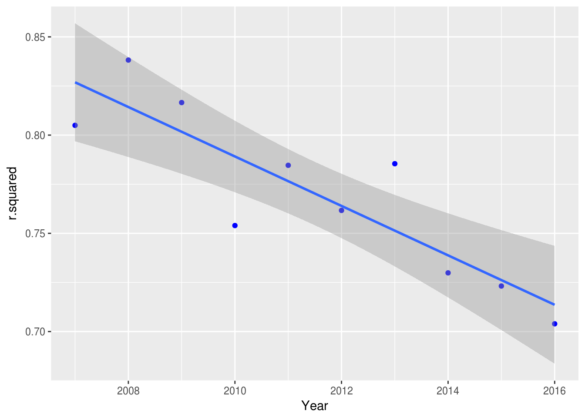
References
Data Science with R
Salaries for the 2014 NBA Season:
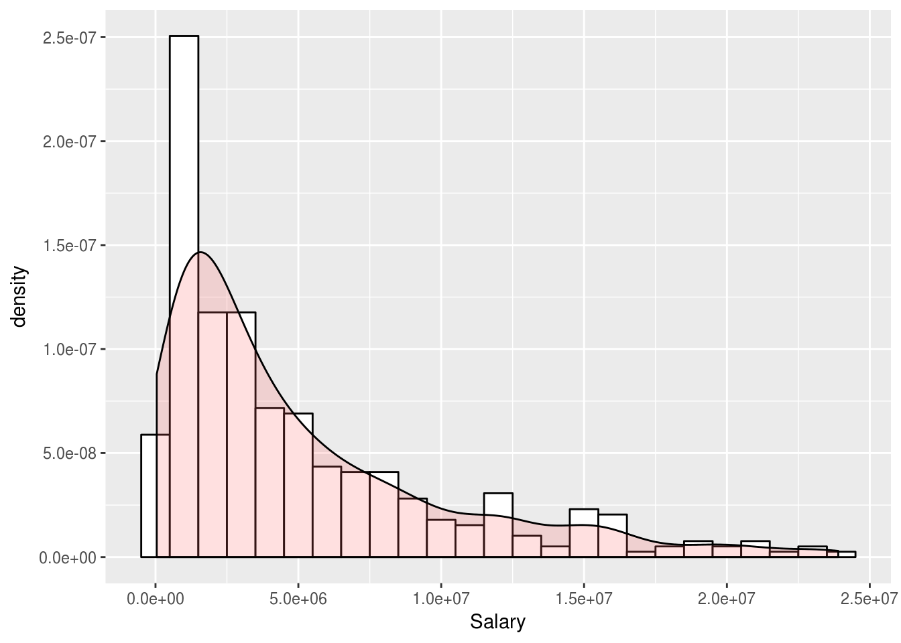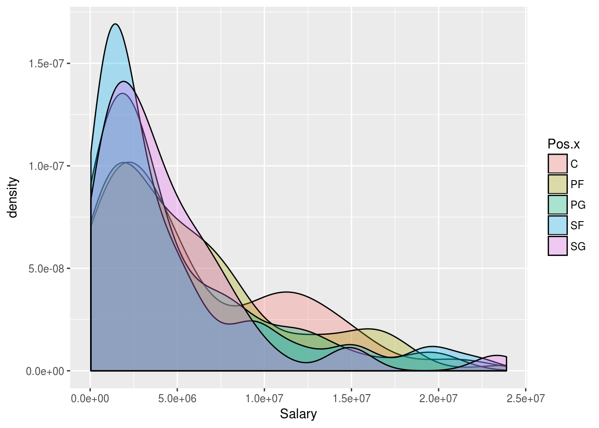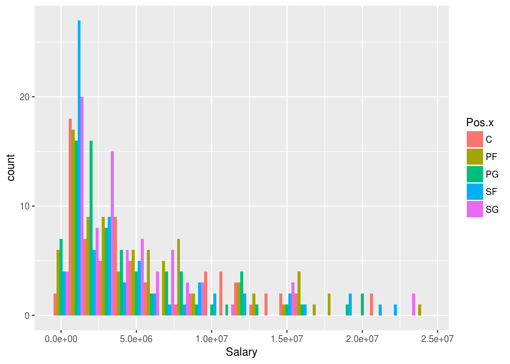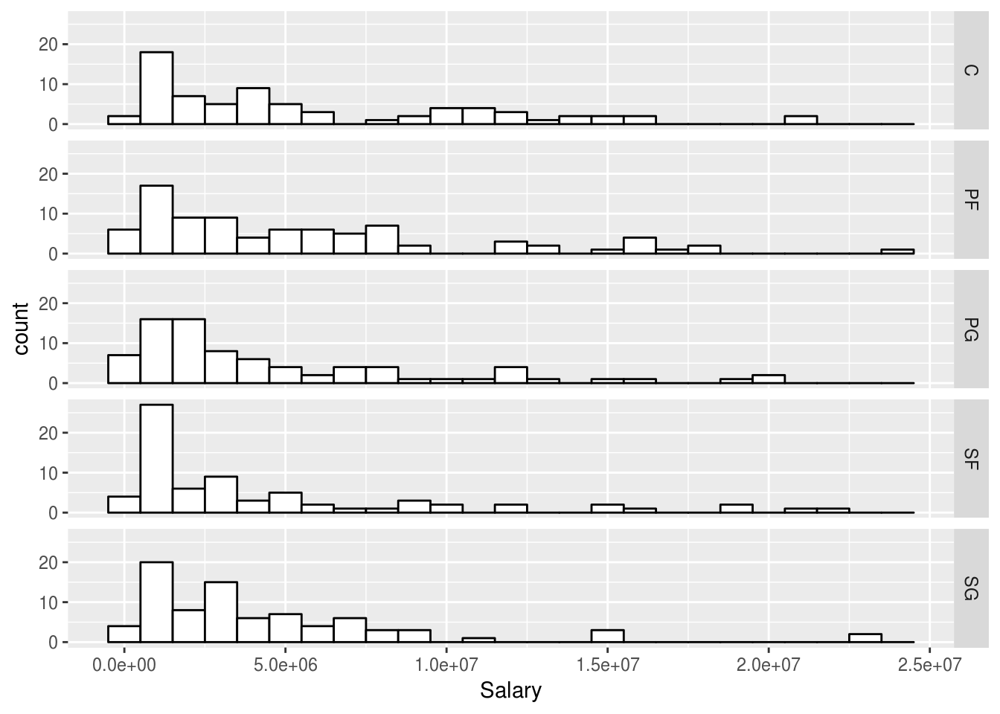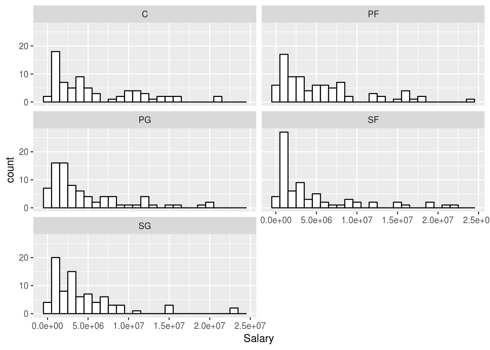
Salaries for the 2014 NBA Season:
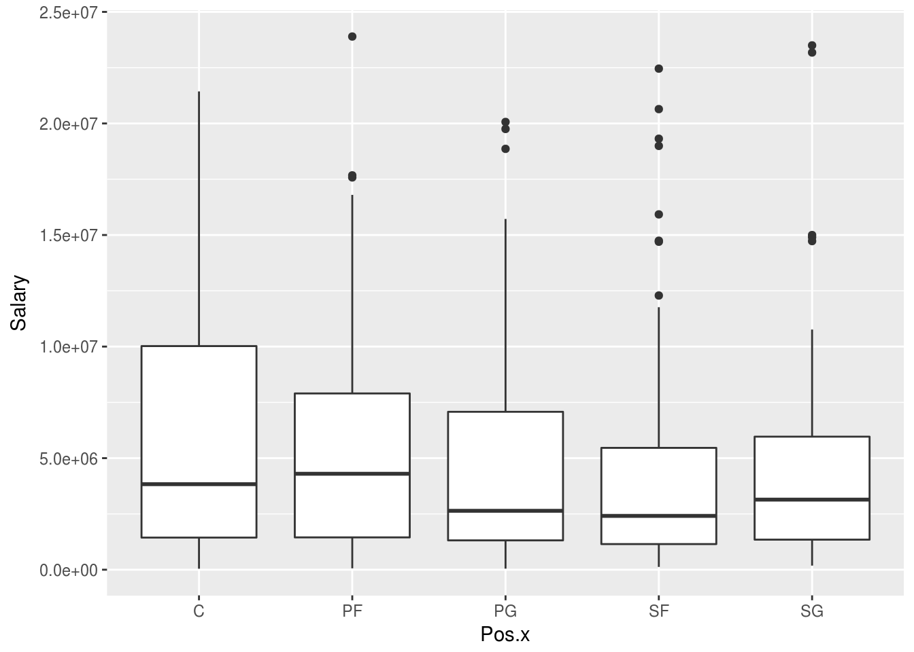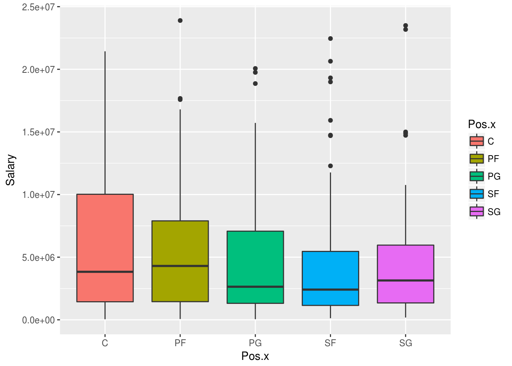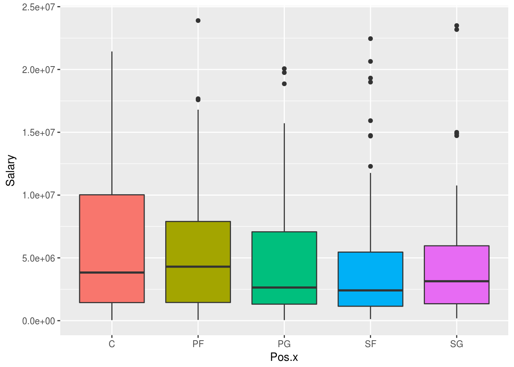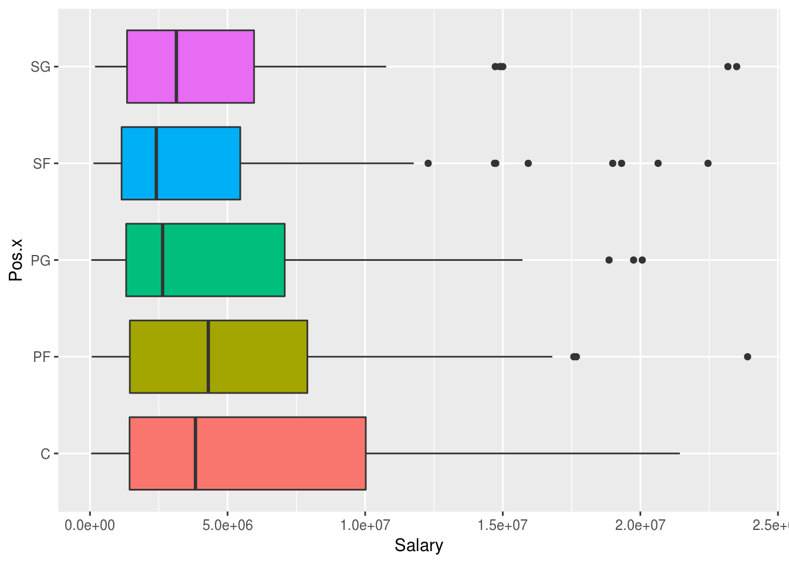
#### Salary vs key regression variables
Scatter plots for the 2014 NBA Season:
ggplot(All.Data, aes(x=DRB, y=Salary)) + geom_point(shape=1) + # Use hollow circles
geom_smooth(method=lm) # Add linear regression line (by default includes 95% confidence region)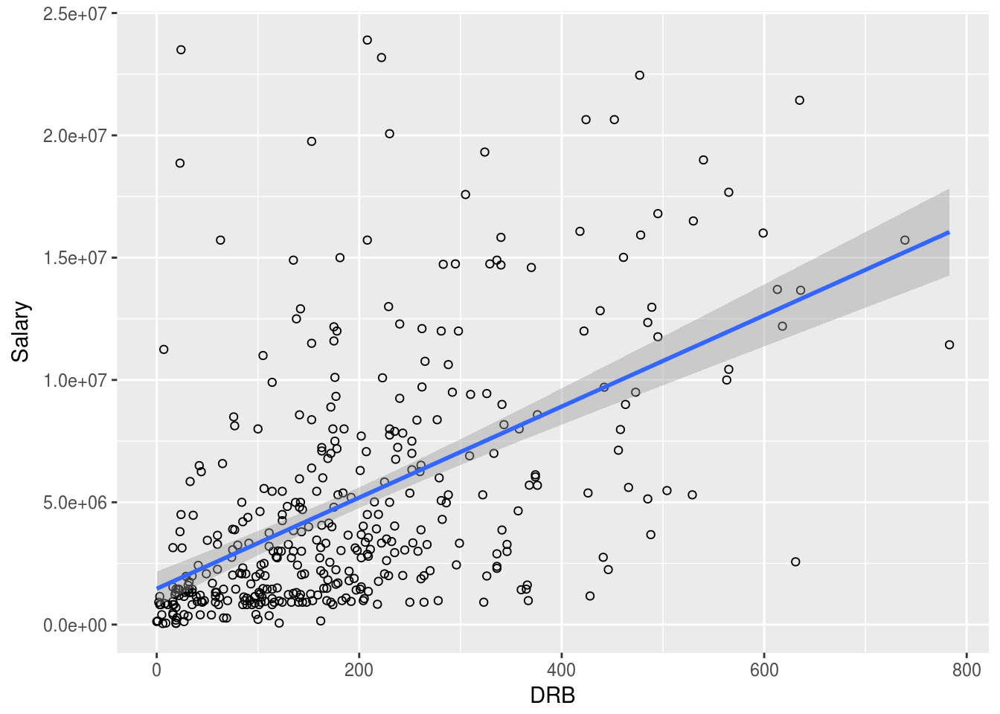
# Set color by condition
All.Data %>% ggplot(aes(x=DRB, y=Salary, color=Pos.x)) + geom_point(shape=1)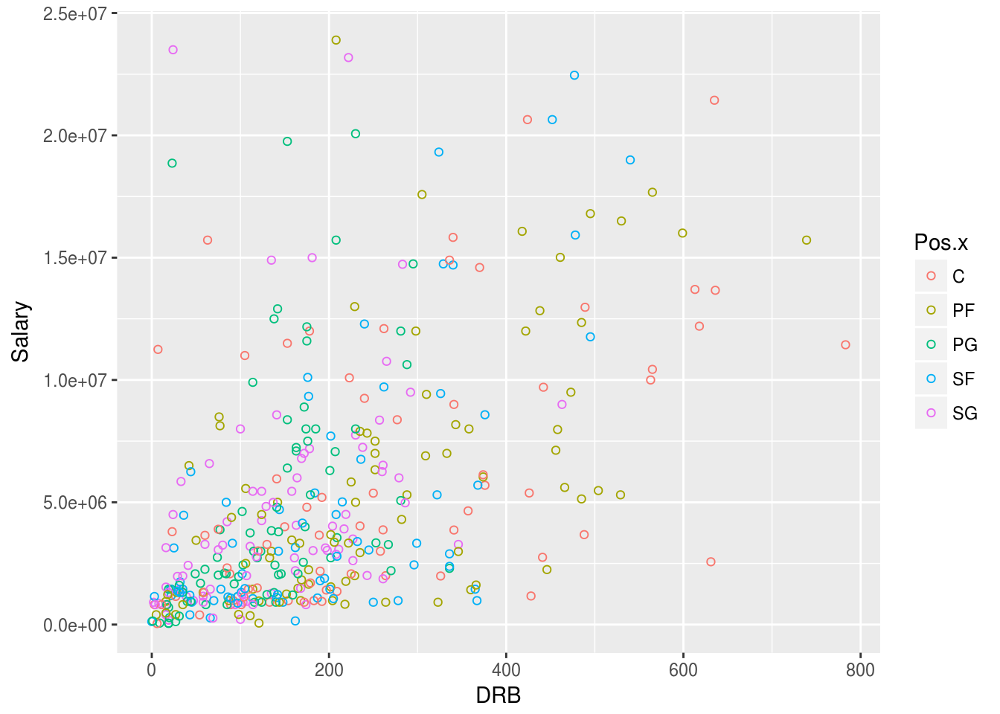
library(scales)##
## Attaching package: 'scales'## The following object is masked from 'package:purrr':
##
## discard## The following objects are masked from 'package:readr':
##
## col_factor, col_numeric# log10
ggplot(All.Data, aes(x=DRB, y=Salary)) + geom_point(shape=1) + # Use hollow circles
geom_smooth(method=lm) + # Add linear regression line (by default includes 95% confidence region)
scale_y_log10()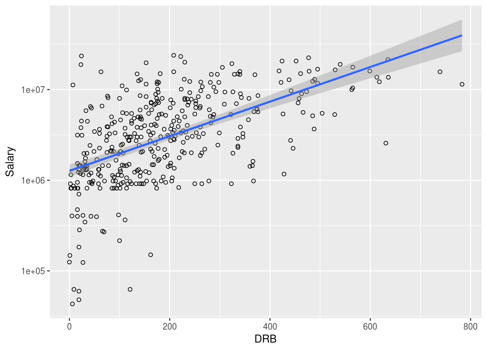
From: http://www.cookbook-r.com/Graphs/Multiple_graphs_on_one_page_(ggplot2)/
# Multiple plot function
#
# ggplot objects can be passed in ..., or to plotlist (as a list of ggplot objects)
# - cols: Number of columns in layout
# - layout: A matrix specifying the layout. If present, 'cols' is ignored.
#
# If the layout is something like matrix(c(1,2,3,3), nrow=2, byrow=TRUE),
# then plot 1 will go in the upper left, 2 will go in the upper right, and
# 3 will go all the way across the bottom.
#
multiplot <- function(..., plotlist=NULL, file, cols=1, layout=NULL) {
library(grid)
# Make a list from the ... arguments and plotlist
plots <- c(list(...), plotlist)
numPlots = length(plots)
# If layout is NULL, then use 'cols' to determine layout
if (is.null(layout)) {
# Make the panel
# ncol: Number of columns of plots
# nrow: Number of rows needed, calculated from # of cols
layout <- matrix(seq(1, cols * ceiling(numPlots/cols)),
ncol = cols, nrow = ceiling(numPlots/cols))
}
if (numPlots==1) {
print(plots[[1]])
} else {
# Set up the page
grid.newpage()
pushViewport(viewport(layout = grid.layout(nrow(layout), ncol(layout))))
# Make each plot, in the correct location
for (i in 1:numPlots) {
# Get the i,j matrix positions of the regions that contain this subplot
matchidx <- as.data.frame(which(layout == i, arr.ind = TRUE))
print(plots[[i]], vp = viewport(layout.pos.row = matchidx$row,
layout.pos.col = matchidx$col))
}
}
}
p1 <- ggplot(All.Data, aes(x=G, y=Salary)) + geom_point(shape=1) + geom_smooth(method=lm)
p2 <- ggplot(All.Data, aes(x=DRB, y=Salary)) + geom_point(shape=1) + geom_smooth(method=lm)
p3 <- ggplot(All.Data, aes(x=CareerFG, y=Salary)) + geom_point(shape=1) + geom_smooth(method=lm)
p4 <- ggplot(All.Data, aes(x=CareerFGA, y=Salary)) + geom_point(shape=1) + geom_smooth(method=lm)
p5 <- ggplot(All.Data, aes(x=CareerORB, y=Salary)) + geom_point(shape=1) + geom_smooth(method=lm)
p6 <- ggplot(All.Data, aes(x=CareerDRB, y=Salary)) + geom_point(shape=1) + geom_smooth(method=lm)
multiplot(p1, p2, p3, p4, p5, p6, cols=3)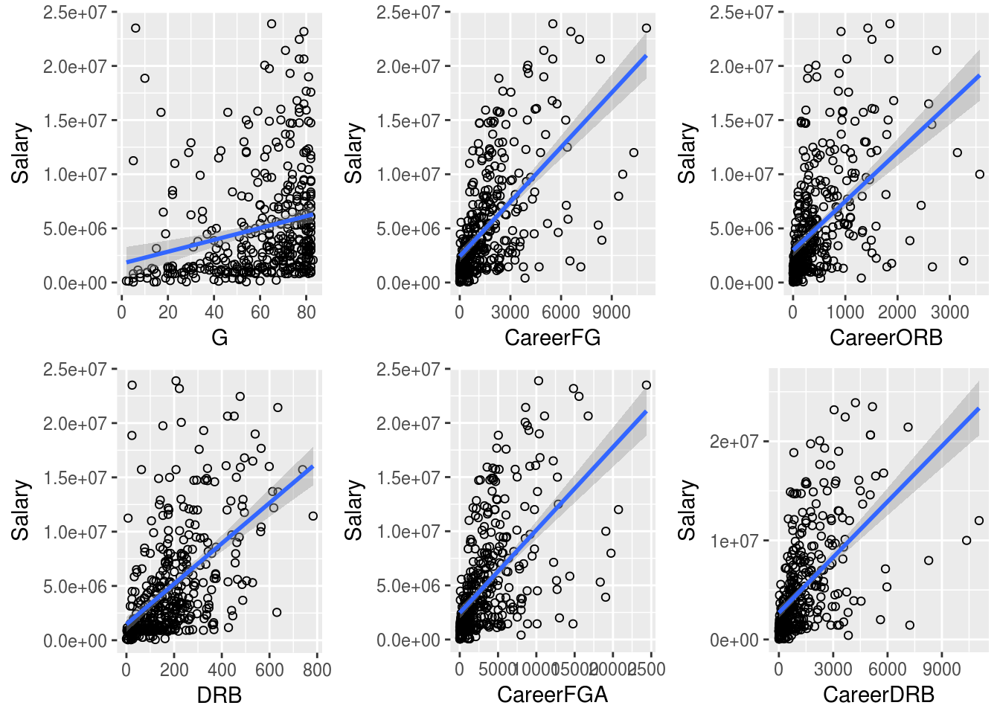
The ORIGINAL equation for my statistic, from January 2017, was:
NBA Salary = $4,890,136 + $1,456,354 Ht - $103,062 Age - $68,397 G + $4,200 FGA + $1,346,387 FTpct - $5,225 ORB + $6,300 DRB + $5,540 AST + $8,512 BLK + $5,235 CareerFG - $2,120 CareerFGA + $741 Career3PA + $1,869 CareerORB + $12,130 PlayoffFTA + $54,807 PlayoffORB - $29,553 PlayoffTOV - $3,289 CareerPlayoffFG + $8,362 CareerPlayoffFT - $9,124 CareerPlayoffDRB + $25,271 CareerPlayoffSTL
http://stats.stackexchange.com/questions/122875/unusual-linear-regression-results-in-r
As before, attach the r Packages tidyverse, and broom.
library(tidyverse)
library(broom)This next block will read in that data from the saved file called, 2007-2016-BBRef.csv:
Salary.File <- "2007-2016-BBRef.csv"
Salary.Data <- read.csv((Salary.File), check.names = FALSE, stringsAsFactors=FALSE)Salary.Data %>%
names() ## [1] "No." "Player" "Pos.x"
## [4] "Ht" "Wt" "Birth.Date"
## [7] "Var.7" "Exp" "College"
## [10] "playerurls" "Salary" "Season"
## [13] "Age" "Tm" "Lg"
## [16] "Pos.y" "G" "GS"
## [19] "MP" "FG" "FGA"
## [22] "FG%" "3P" "3PA"
## [25] "3P%" "2P" "2PA"
## [28] "2P%" "eFG%" "FT"
## [31] "FTA" "FT%" "ORB"
## [34] "DRB" "TRB" "AST"
## [37] "STL" "BLK" "TOV"
## [40] "PF" "PTS" "CareerG"
## [43] "CareerGS" "CareerMP" "CareerFG"
## [46] "CareerFGA" "Career3P" "Career3PA"
## [49] "Career2P" "Career2PA" "CareerFT"
## [52] "CareerFTA" "CareerORB" "CareerDRB"
## [55] "CareerTRB" "CareerAST" "CareerSTL"
## [58] "CareerBLK" "CareerTOV" "CareerPF"
## [61] "CareerPTS" "Last2YrsG" "Last2YrsGS"
## [64] "Last2YrsMP" "Last2YrsFG" "Last2YrsFGA"
## [67] "Last2Yrs3P" "Last2Yrs3PA" "Last2Yrs2P"
## [70] "Last2Yrs2PA" "Last2YrsFT" "Last2YrsFTA"
## [73] "Last2YrsORB" "Last2YrsDRB" "Last2YrsTRB"
## [76] "Last2YrsAST" "Last2YrsSTL" "Last2YrsBLK"
## [79] "Last2YrsTOV" "Last2YrsPF" "Last2YrsPTS"
## [82] "PlayoffSeason" "PlayoffAge" "PlayoffTm"
## [85] "PlayoffLg" "PlayoffPos" "PlayoffG"
## [88] "PlayoffGS" "PlayoffMP" "PlayoffFG"
## [91] "PlayoffFGA" "PlayoffFG%" "Playoff3P"
## [94] "Playoff3PA" "Playoff3P%" "Playoff2P"
## [97] "Playoff2PA" "Playoff2P%" "PlayoffeFG%"
## [100] "PlayoffFT" "PlayoffFTA" "PlayoffFT%"
## [103] "PlayoffORB" "PlayoffDRB" "PlayoffTRB"
## [106] "PlayoffAST" "PlayoffSTL" "PlayoffBLK"
## [109] "PlayoffTOV" "PlayoffPF" "PlayoffPTS"
## [112] "CareerPlayoffG" "CareerPlayoffGS" "CareerPlayoffMP"
## [115] "CareerPlayoffFG" "CareerPlayoffFGA" "CareerPlayoff3P"
## [118] "CareerPlayoff3PA" "CareerPlayoff2P" "CareerPlayoff2PA"
## [121] "CareerPlayoffFT" "CareerPlayoffFTA" "CareerPlayoffORB"
## [124] "CareerPlayoffDRB" "CareerPlayoffTRB" "CareerPlayoffAST"
## [127] "CareerPlayoffSTL" "CareerPlayoffBLK" "CareerPlayoffTOV"
## [130] "CareerPlayoffPF" "CareerPlayoffPTS" "Year"# Choose these variables from the list above as
# independent variables of interest:
chosenlmvars <- c("Ht", "Wt", "Exp", "Age", "G", "GS", "MP", "FG", "FGA",
"FG%", "3P", "3PA", "3P%", "2P", "2PA", "2P%", "eFG%", "FT", "FTA",
"FT%", "ORB", "DRB", "TRB", "AST", "STL", "BLK", "TOV", "PF", "PTS",
"CareerG", "CareerGS", "CareerMP", "CareerFG", "CareerFGA", "Career3P",
"Career3PA", "Career2P", "Career2PA", "CareerFT", "CareerFTA",
"CareerORB", "CareerDRB", "CareerTRB", "CareerAST", "CareerSTL",
"CareerBLK", "CareerTOV", "CareerPF", "CareerPTS", "PlayoffG",
"PlayoffGS", "PlayoffMP", "PlayoffFG", "PlayoffFGA", "PlayoffFG%",
"Playoff3P", "Playoff3PA", "Playoff3P%", "Playoff2P", "Playoff2PA",
"Playoff2P%", "PlayoffeFG%", "PlayoffFT", "PlayoffFTA", "PlayoffFT%",
"PlayoffORB", "PlayoffDRB", "PlayoffTRB", "PlayoffAST", "PlayoffSTL",
"PlayoffBLK", "PlayoffTOV", "PlayoffPF", "PlayoffPTS", "CareerPlayoffG",
"CareerPlayoffGS", "CareerPlayoffMP", "CareerPlayoffFG", "CareerPlayoffFGA",
"CareerPlayoff3P", "CareerPlayoff3PA", "CareerPlayoff2P", "CareerPlayoff2PA",
"CareerPlayoffFT", "CareerPlayoffFTA", "CareerPlayoffORB", "CareerPlayoffDRB",
"CareerPlayoffTRB", "CareerPlayoffAST", "CareerPlayoffSTL", "CareerPlayoffBLK",
"CareerPlayoffTOV", "CareerPlayoffPF", "CareerPlayoffPTS")# Since we have some r special symbols in our Column names (like "%", and numbers: "3P"),
# DEFINITION:
# Take our variables of interest, then
# Paste backticks around each, then
# paste " + " between each, then
# paste "Salary ~ " before the whole thing, then
# turn that entire string into a formula, then
# put that formula in a variable -> lmformula
chosenlmvars %>%
sprintf("`%s`", .) %>%
paste(collapse= " + ") %>%
paste("Salary ~ ", .) %>%
as.formula() ->
lmformulalength(chosenlmvars)## [1] 94We currently have 94 independent variables in our model.
This is too many.
When we try to regress a small data set (Point Guards from 2007 = 74 data points) with a large number of independent variables (94 variables in our ), we are overfitting our model. This results in error messages or NaN values for p.squared.
Reference: Unusual linear regression results in R
The result means that you do not have enough observations to fit a model with 13 variables and an intercept. If you have 14 or less observations, you fit the model perfectly. In 2D, imagine that you have just 2 observations - then you can easily fit a line through them just by calculating a slope and an intercept. You do not know any other observation to fully determine the line to fit these observations.
In case of 13 variables and an intercept, the interpretation is similar - you can calculate the coefficients instead of estimating them.
Let’s look at the statistically significant variables from each year:
# DEFINITION:
# Make a new variable called "regressions" from the following:
# Take data frame ("Salary.Data"), then
# group by Year, then
# use the do command to run a linear regresion for each year
# using the long lmformula variable created above:
###########################
regressions <-
Salary.Data %>%
group_by(Year) %>%
do(fit = lm(data=., lmformula))# DEFINITION:
# When you print the tibble to the screen, print ALL rows, not just the first ten rows:
options(tibble.print_max = Inf)How many statistically significant, independent variables do we have per Year?
Use the tally() command after group_by().
regressions %>%
tidy(fit) %>%
filter(p.value <.05) %>%
group_by(Year) %>%
tally()## # A tibble: 10 × 2
## Year n
## <int> <int>
## 1 2007 11
## 2 2008 9
## 3 2009 17
## 4 2010 9
## 5 2011 6
## 6 2012 15
## 7 2013 11
## 8 2014 14
## 9 2015 7
## 10 2016 9Perhaps, we should just use the significant variables from year 2009. It may have the most inclusive set since it has the largest number of variables:
## 21 2009 Age -301146.879 82064.9091 -3.669618 2.898815e-04
## 22 2009 G -84116.152 20029.5350 -4.199606 3.578767e-05
## 23 2009 CareerG 13810.943 6113.3703 2.259137 2.463038e-02
## 24 2009 CareerMP -1367.766 339.5379 -4.028316 7.211083e-05
## 25 2009 CareerFTA 5577.669 2757.5533 2.022688 4.403899e-02
## 26 2009 CareerORB 3715.562 1743.1101 2.131570 3.389756e-02
## 27 2009 CareerAST 2166.723 805.8418 2.688770 7.593916e-03
## 28 2009 PlayoffFT -175050.682 84183.8177 -2.079386 3.847580e-02
## 29 2009 PlayoffFTA 162862.813 70525.8398 2.309264 2.164400e-02
## 30 2009 CareerPlayoffMP 7866.517 2610.9590 3.012884 2.820207e-03
## 31 2009 CareerPlayoffFG 61304.221 23472.1825 2.611782 9.484409e-03
## 32 2009 CareerPlayoffFGA -39580.251 11366.5036 -3.482183 5.753755e-04
## 33 2009 CareerPlayoff3P -123859.428 55293.4295 -2.240039 2.585922e-02
## 34 2009 CareerPlayoffFT 73474.055 17246.1826 4.260308 2.776494e-05
## 35 2009 CareerPlayoffFTA -55971.583 14445.5773 -3.874652 1.325389e-04
## 36 2009 CareerPlayoffAST -23399.349 7562.5024 -3.094128 2.169993e-03
## 37 2009 CareerPlayoffTOV 62897.205 20161.6163 3.119651 1.996213e-03Or, better yet, we have a long list of variables in our model (chosenlmvars), and we can make a long list of all the significant variables from our 10 years of regressions.
Lets get all strings that are the same in the two lists:
* chosenlmvars, and
* our significant terms from above
tmp <- regressions %>%
tidy(fit) %>%
filter(p.value <.05) %>%
group_by(Year)
intersect(chosenlmvars, tmp$term)## [1] "Wt" "Age" "G"
## [4] "FGA" "DRB" "AST"
## [7] "BLK" "TOV" "PF"
## [10] "CareerG" "CareerGS" "CareerMP"
## [13] "CareerFG" "CareerFGA" "Career3P"
## [16] "Career3PA" "CareerFT" "CareerFTA"
## [19] "CareerORB" "CareerDRB" "CareerAST"
## [22] "CareerSTL" "CareerBLK" "CareerPF"
## [25] "PlayoffGS" "PlayoffMP" "PlayoffFG"
## [28] "PlayoffFGA" "Playoff3P" "Playoff3PA"
## [31] "PlayoffFT" "PlayoffFTA" "PlayoffORB"
## [34] "PlayoffDRB" "PlayoffAST" "PlayoffBLK"
## [37] "PlayoffTOV" "CareerPlayoffMP" "CareerPlayoffFG"
## [40] "CareerPlayoffFGA" "CareerPlayoff3P" "CareerPlayoffFT"
## [43] "CareerPlayoffFTA" "CareerPlayoffORB" "CareerPlayoffDRB"
## [46] "CareerPlayoffAST" "CareerPlayoffSTL" "CareerPlayoffBLK"
## [49] "CareerPlayoffTOV" "CareerPlayoffPF"Now, by comparing statistically significant variables over the 10 year period, we conclude that the following are to be used in our model:
# Choose these variables from the list above as
# independent variables of interest:
chosenlmvars <- c(
"Wt", "Age", "G",
"FGA", "DRB", "AST",
"BLK", "TOV", "PF",
"CareerG", "CareerGS", "CareerMP",
"CareerFG", "CareerFGA", "Career3P",
"Career3PA", "CareerFT", "CareerFTA",
"CareerORB", "CareerDRB", "CareerAST",
"CareerSTL", "CareerBLK", "CareerPF",
"PlayoffGS", "PlayoffMP", "PlayoffFG",
"PlayoffFGA", "Playoff3P", "Playoff3PA",
"PlayoffFT", "PlayoffFTA", "PlayoffORB",
"PlayoffDRB", "PlayoffAST", "PlayoffBLK",
"PlayoffTOV", "CareerPlayoffMP", "CareerPlayoffFG",
"CareerPlayoffFGA", "CareerPlayoff3P", "CareerPlayoffFT",
"CareerPlayoffFTA", "CareerPlayoffORB", "CareerPlayoffDRB",
"CareerPlayoffAST", "CareerPlayoffSTL", "CareerPlayoffBLK",
"CareerPlayoffTOV", "CareerPlayoffPF")# Since we have some r special symbols in our Column names (like "%", and numbers: "3P"),
# DEFINITION:
# Take our variables of interest, then
# Paste backticks around each, then
# paste " + " between each, then
# paste "Salary ~ " before the whole thing, then
# turn that entire string into a formula, then
# put that formula in a variable -> lmformula
chosenlmvars %>%
sprintf("`%s`", .) %>%
paste(collapse= " + ") %>%
paste("Salary ~ ", .) %>%
as.formula() ->
lmformulaI group the entire 10 years of data by each year and by Position then use the do command to perform a multiple linear regression (Salary versus all other variables) for each of these years and positions:
# DEFINITION:
# Make a new variable called "regressions" from the following:
# Take data frame ("Salary.Data"), then
# group by Year and Position, then
# use the do command to run a linear regresion for each year
# using the long lmformula variable created above:
###########################
regressions <-
Salary.Data %>%
group_by(Year, Pos.x) %>%
do(fit = lm(data=., lmformula))Look at the regressions:
options(tibble.print_max = 10, tibble.print_min = 10)
regressions %>% tidy(fit)## Source: local data frame [2,550 x 7]
## Groups: Year, Pos.x [50]
##
## Year Pos.x term estimate std.error statistic p.value
## <int> <chr> <chr> <dbl> <dbl> <dbl> <dbl>
## 1 2007 C (Intercept) 13643622.752 5092354.154 2.6792368 0.01186184
## 2 2007 C Wt -25961.483 14307.341 -1.8145568 0.07960387
## 3 2007 C Age -257258.082 130914.569 -1.9650837 0.05872372
## 4 2007 C G -33120.656 31672.247 -1.0457312 0.30403826
## 5 2007 C FGA -5428.073 4591.574 -1.1821813 0.24641947
## 6 2007 C DRB 24987.223 9453.315 2.6432233 0.01292896
## 7 2007 C AST -13964.992 15094.585 -0.9251657 0.36226242
## 8 2007 C BLK -32448.226 14629.157 -2.2180517 0.03426697
## 9 2007 C TOV 41729.156 18223.296 2.2898797 0.02923412
## 10 2007 C PF -18017.244 12434.320 -1.4489932 0.15771263
## # ... with 2,540 more rowsNow I look at the R2 values for the regressions by Year:
regressions %>% glance(fit)## Source: local data frame [50 x 13]
## Groups: Year, Pos.x [50]
##
## Year Pos.x r.squared adj.r.squared sigma statistic p.value
## <int> <chr> <dbl> <dbl> <dbl> <dbl> <dbl>
## 1 2007 C 0.9627423 0.9006461 1551483.9 15.504048 3.968961e-12
## 2 2007 PF 0.9537567 0.8791707 1714057.6 12.787349 2.803300e-11
## 3 2007 PG 0.9702626 0.9056162 1415036.3 15.008759 1.038530e-09
## 4 2007 SF 0.9943934 0.9593525 823788.7 28.378007 1.816587e-05
## 5 2007 SG 0.9650752 0.8819210 1789199.7 11.605849 5.477196e-08
## 6 2008 C 0.9409015 0.8539918 1911140.3 10.826207 5.013926e-11
## 7 2008 PF 0.9755756 0.9145146 1547488.9 15.977072 5.786535e-09
## 8 2008 PG 0.9858474 0.9314142 1227583.5 18.111142 9.013580e-07
## 9 2008 SF 0.9671270 0.8849443 1510360.8 11.768024 9.350509e-08
## 10 2008 SG 0.9500380 0.8414250 2081518.2 8.747002 2.556934e-07
## # ... with 40 more rows, and 6 more variables: df <int>, logLik <dbl>,
## # AIC <dbl>, BIC <dbl>, deviance <dbl>, df.residual <int>Now lets plot R2 vs year.
First, lets look at the data we want:
regressions %>%
glance(fit) %>%
select(Position = Pos.x, Year, r.squared)## Source: local data frame [50 x 3]
## Groups: Year, Position [50]
##
## Position Year r.squared
## <chr> <int> <dbl>
## 1 C 2007 0.9627423
## 2 PF 2007 0.9537567
## 3 PG 2007 0.9702626
## 4 SF 2007 0.9943934
## 5 SG 2007 0.9650752
## 6 C 2008 0.9409015
## 7 PF 2008 0.9755756
## 8 PG 2008 0.9858474
## 9 SF 2008 0.9671270
## 10 SG 2008 0.9500380
## # ... with 40 more rowsNow, lets take that data and scatterplot it:
regressions %>%
glance(fit) %>%
select(Position = Pos.x, Year, r.squared) %>%
ggplot(aes(x=Year, y=r.squared)) +
geom_point(color="blue") +
geom_smooth(method = "lm", se = TRUE) + facet_wrap(~ Position)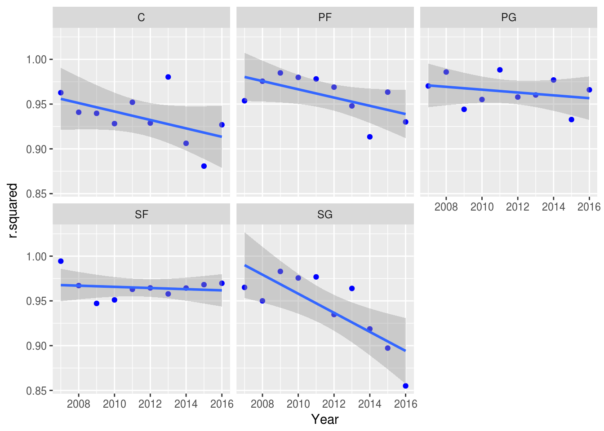
The Model3 equation for my statistic, from February 2017, was:
NBA Salary = $8,831,207 + $1,962,105 Ht - $138,097 Age + $8,643 GS + $4,060 AST + $2,235 PTS - $1,195 CareerFGA + $220 CareerTRB + $1,160 CareerPTS
As before, attach the r Packages tidyverse, and broom.
library(tidyverse)
library(broom)This next block will read in that data from the saved file called, 2007-2016-BBRef.csv:
Salary.File <- "2007-2016-BBRef.csv"
Salary.Data <- read.csv((Salary.File), check.names = FALSE, stringsAsFactors=FALSE)From the work done above, here are the starting 50 variables to be used in our regressions:
## [1] "Wt" "Age" "G"
## [4] "FGA" "DRB" "AST"
## [7] "BLK" "TOV" "PF"
## [10] "CareerG" "CareerGS" "CareerMP"
## [13] "CareerFG" "CareerFGA" "Career3P"
## [16] "Career3PA" "CareerFT" "CareerFTA"
## [19] "CareerORB" "CareerDRB" "CareerAST"
## [22] "CareerSTL" "CareerBLK" "CareerPF"
## [25] "PlayoffGS" "PlayoffMP" "PlayoffFG"
## [28] "PlayoffFGA" "Playoff3P" "Playoff3PA"
## [31] "PlayoffFT" "PlayoffFTA" "PlayoffORB"
## [34] "PlayoffDRB" "PlayoffAST" "PlayoffBLK"
## [37] "PlayoffTOV" "CareerPlayoffMP" "CareerPlayoffFG"
## [40] "CareerPlayoffFGA" "CareerPlayoff3P" "CareerPlayoffFT"
## [43] "CareerPlayoffFTA" "CareerPlayoffORB" "CareerPlayoffDRB"
## [46] "CareerPlayoffAST" "CareerPlayoffSTL" "CareerPlayoffBLK"
## [49] "CareerPlayoffTOV" "CareerPlayoffPF"chosenlmvars <- c(
"Wt", "Age", "G",
"FGA", "DRB", "AST",
"BLK", "TOV", "PF",
"CareerG", "CareerGS", "CareerMP",
"CareerFG", "CareerFGA", "Career3P",
"Career3PA", "CareerFT", "CareerFTA",
"CareerORB", "CareerDRB", "CareerAST",
"CareerSTL", "CareerBLK", "CareerPF",
"PlayoffGS", "PlayoffMP", "PlayoffFG",
"PlayoffFGA", "Playoff3P", "Playoff3PA",
"PlayoffFT", "PlayoffFTA", "PlayoffORB",
"PlayoffDRB", "PlayoffAST", "PlayoffBLK",
"PlayoffTOV", "CareerPlayoffMP", "CareerPlayoffFG",
"CareerPlayoffFGA", "CareerPlayoff3P", "CareerPlayoffFT",
"CareerPlayoffFTA", "CareerPlayoffORB", "CareerPlayoffDRB",
"CareerPlayoffAST", "CareerPlayoffSTL", "CareerPlayoffBLK",
"CareerPlayoffTOV", "CareerPlayoffPF")
# Since we have some r special symbols in our Column names (like "%", and numbers: "3P"),
# DEFINITION:
# Take our variables of interest, then
# Paste backticks around each, then
# paste " + " between each, then
# paste "Salary ~ " before the whole thing, then
# turn that entire string into a formula, then
# put that formula in a variable -> lmformula
chosenlmvars %>%
sprintf("`%s`", .) %>%
paste(collapse= " + ") %>%
paste("Salary ~ ", .) %>%
as.formula() ->
lmformulaLet’s take a look at the Center position over the 10 years of data and perform a regression for each year:
# DEFINITION:
# Make a new variable called "Center_regressions" from the following:
# Take data frame ("Salary.Data"), then
# grab all rows in Year==2007 that are Position==Center, then
# run a single linear regresion using the long lmformula variable created above:
###########################
tmp <-
Salary.Data %>%
filter(Pos.x=="C", Year==2007)
full.model <- lm(data=tmp, lmformula)
Center_regressions <- step(full.model, direction="backward")Look at the 2007 regression, filter only the statistically significant variables at the .05 level:
summary(Center_regressions)##
## Call:
## lm(formula = Salary ~ Wt + Age + G + FGA + DRB + AST + BLK +
## TOV + PF + CareerG + CareerGS + CareerMP + CareerFG + CareerFGA +
## Career3P + Career3PA + CareerFT + CareerFTA + CareerORB +
## CareerDRB + CareerBLK + CareerPF + PlayoffGS + PlayoffMP +
## PlayoffFG + PlayoffFGA + Playoff3P + Playoff3PA + PlayoffFT +
## PlayoffFTA + PlayoffORB + PlayoffDRB + PlayoffAST + PlayoffBLK +
## PlayoffTOV + CareerPlayoffMP + CareerPlayoffFG + CareerPlayoffFGA +
## CareerPlayoffFTA + CareerPlayoffORB + CareerPlayoffDRB +
## CareerPlayoffAST + CareerPlayoffSTL + CareerPlayoffBLK +
## CareerPlayoffTOV + CareerPlayoffPF, data = tmp)
##
## Residuals:
## Min 1Q Median 3Q Max
## -2710027 -505755 -13347 566223 2828754
##
## Coefficients:
## Estimate Std. Error t value Pr(>|t|)
## (Intercept) 13556965.8 4425515.8 3.063 0.004262 **
## Wt -26095.5 12101.9 -2.156 0.038221 *
## Age -253372.4 122228.6 -2.073 0.045826 *
## G -34442.1 28564.8 -1.206 0.236237
## FGA -5510.2 4139.7 -1.331 0.192029
## DRB 26502.2 8180.6 3.240 0.002676 **
## AST -13017.1 10367.7 -1.256 0.217844
## BLK -35138.7 12757.1 -2.754 0.009374 **
## TOV 37245.2 15367.0 2.424 0.020834 *
## PF -16734.0 11286.3 -1.483 0.147370
## CareerG 27775.6 8506.8 3.265 0.002500 **
## CareerGS 34089.9 6545.9 5.208 9.23e-06 ***
## CareerMP -2005.3 747.4 -2.683 0.011181 *
## CareerFG -7114.7 4502.9 -1.580 0.123357
## CareerFGA 4463.9 2389.5 1.868 0.070389 .
## Career3P 174839.1 133433.0 1.310 0.198873
## Career3PA -64629.3 49305.9 -1.311 0.198717
## CareerFT 11209.2 5521.6 2.030 0.050234 .
## CareerFTA -8314.0 4657.8 -1.785 0.083191 .
## CareerORB 3452.6 3291.8 1.049 0.301655
## CareerDRB 2318.6 2363.1 0.981 0.333451
## CareerBLK 8346.7 2421.0 3.448 0.001525 **
## CareerPF -5271.2 3478.4 -1.515 0.138910
## PlayoffGS 686010.5 250148.9 2.742 0.009658 **
## PlayoffMP 78050.1 19889.4 3.924 0.000402 ***
## PlayoffFG -840291.7 264286.8 -3.179 0.003141 **
## PlayoffFGA 520455.6 150986.3 3.447 0.001527 **
## Playoff3P -3361275.5 918560.6 -3.659 0.000850 ***
## Playoff3PA 918680.7 314579.5 2.920 0.006168 **
## PlayoffFT -510545.5 276047.7 -1.849 0.073097 .
## PlayoffFTA 470248.0 197143.0 2.385 0.022781 *
## PlayoffORB 153667.3 120768.7 1.272 0.211861
## PlayoffDRB -625691.9 103664.1 -6.036 7.74e-07 ***
## PlayoffAST -911883.0 224397.7 -4.064 0.000270 ***
## PlayoffBLK 381447.2 209633.6 1.820 0.077636 .
## PlayoffTOV -338094.9 130020.5 -2.600 0.013685 *
## CareerPlayoffMP -29704.7 7271.6 -4.085 0.000254 ***
## CareerPlayoffFG 59999.5 49057.5 1.223 0.229723
## CareerPlayoffFGA 26498.6 24659.1 1.075 0.290122
## CareerPlayoffFTA -24178.8 18643.2 -1.297 0.203388
## CareerPlayoffORB -70400.0 40819.2 -1.725 0.093667 .
## CareerPlayoffDRB 78471.7 31399.4 2.499 0.017442 *
## CareerPlayoffAST 47523.5 37813.6 1.257 0.217398
## CareerPlayoffSTL 202935.0 56602.4 3.585 0.001044 **
## CareerPlayoffBLK -58513.5 56742.3 -1.031 0.309721
## CareerPlayoffTOV -101119.3 50501.1 -2.002 0.053278 .
## CareerPlayoffPF 85971.8 25399.0 3.385 0.001810 **
## ---
## Signif. codes: 0 '***' 0.001 '**' 0.01 '*' 0.05 '.' 0.1 ' ' 1
##
## Residual standard error: 1467000 on 34 degrees of freedom
## Multiple R-squared: 0.9623, Adjusted R-squared: 0.9112
## F-statistic: 18.84 on 46 and 34 DF, p-value: 1.473e-14options(tibble.print_max = Inf)
Center_regressions %>%
tidy() %>%
filter(p.value <.05)## term estimate std.error statistic p.value
## 1 (Intercept) 13556965.756 4425515.819 3.063364 4.262424e-03
## 2 Wt -26095.500 12101.880 -2.156318 3.822128e-02
## 3 Age -253372.442 122228.572 -2.072940 4.582619e-02
## 4 DRB 26502.249 8180.597 3.239647 2.675829e-03
## 5 BLK -35138.691 12757.150 -2.754431 9.373928e-03
## 6 TOV 37245.161 15366.998 2.423711 2.083359e-02
## 7 CareerG 27775.616 8506.775 3.265117 2.499585e-03
## 8 CareerGS 34089.915 6545.888 5.207837 9.230746e-06
## 9 CareerMP -2005.310 747.369 -2.683159 1.118100e-02
## 10 CareerBLK 8346.689 2420.989 3.447637 1.524898e-03
## 11 PlayoffGS 686010.522 250148.927 2.742408 9.658346e-03
## 12 PlayoffMP 78050.127 19889.431 3.924201 4.021840e-04
## 13 PlayoffFG -840291.680 264286.795 -3.179469 3.140536e-03
## 14 PlayoffFGA 520455.645 150986.303 3.447039 1.527393e-03
## 15 Playoff3P -3361275.544 918560.572 -3.659286 8.495241e-04
## 16 Playoff3PA 918680.719 314579.454 2.920346 6.167772e-03
## 17 PlayoffFTA 470248.038 197142.973 2.385315 2.278148e-02
## 18 PlayoffDRB -625691.931 103664.054 -6.035766 7.739713e-07
## 19 PlayoffAST -911882.987 224397.690 -4.063692 2.696824e-04
## 20 PlayoffTOV -338094.855 130020.476 -2.600320 1.368503e-02
## 21 CareerPlayoffMP -29704.711 7271.617 -4.085021 2.536134e-04
## 22 CareerPlayoffDRB 78471.689 31399.381 2.499148 1.744170e-02
## 23 CareerPlayoffSTL 202934.967 56602.431 3.585269 1.043793e-03
## 24 CareerPlayoffPF 85971.753 25399.013 3.384846 1.809555e-03options(tibble.print_max = 10, tibble.print_min = 10)As before, attach the r Packages tidyverse, and broom.
library(tidyverse)
library(broom)Read the data from the saved file called, 2007-2016-BBRef.csv:
Salary.File <- "2007-2016-BBRef.csv"
Salary.Data <- read.csv((Salary.File), check.names = FALSE, stringsAsFactors=FALSE)From the work done above, here are the starting 50 variables to be used in our regressions:
## [1] "Wt" "Age" "G"
## [4] "FGA" "DRB" "AST"
## [7] "BLK" "TOV" "PF"
## [10] "CareerG" "CareerGS" "CareerMP"
## [13] "CareerFG" "CareerFGA" "Career3P"
## [16] "Career3PA" "CareerFT" "CareerFTA"
## [19] "CareerORB" "CareerDRB" "CareerAST"
## [22] "CareerSTL" "CareerBLK" "CareerPF"
## [25] "PlayoffGS" "PlayoffMP" "PlayoffFG"
## [28] "PlayoffFGA" "Playoff3P" "Playoff3PA"
## [31] "PlayoffFT" "PlayoffFTA" "PlayoffORB"
## [34] "PlayoffDRB" "PlayoffAST" "PlayoffBLK"
## [37] "PlayoffTOV" "CareerPlayoffMP" "CareerPlayoffFG"
## [40] "CareerPlayoffFGA" "CareerPlayoff3P" "CareerPlayoffFT"
## [43] "CareerPlayoffFTA" "CareerPlayoffORB" "CareerPlayoffDRB"
## [46] "CareerPlayoffAST" "CareerPlayoffSTL" "CareerPlayoffBLK"
## [49] "CareerPlayoffTOV" "CareerPlayoffPF"chosenlmvars <- c(
"Wt", "Age", "G",
"FGA", "DRB", "AST",
"BLK", "TOV", "PF",
"CareerG", "CareerGS", "CareerMP",
"CareerFG", "CareerFGA", "Career3P",
"Career3PA", "CareerFT", "CareerFTA",
"CareerORB", "CareerDRB", "CareerAST",
"CareerSTL", "CareerBLK", "CareerPF",
"PlayoffGS", "PlayoffMP", "PlayoffFG",
"PlayoffFGA", "Playoff3P", "Playoff3PA",
"PlayoffFT", "PlayoffFTA", "PlayoffORB",
"PlayoffDRB", "PlayoffAST", "PlayoffBLK",
"PlayoffTOV", "CareerPlayoffMP", "CareerPlayoffFG",
"CareerPlayoffFGA", "CareerPlayoff3P", "CareerPlayoffFT",
"CareerPlayoffFTA", "CareerPlayoffORB", "CareerPlayoffDRB",
"CareerPlayoffAST", "CareerPlayoffSTL", "CareerPlayoffBLK",
"CareerPlayoffTOV", "CareerPlayoffPF")
# Since we have some r special symbols in our Column names (like "%", and numbers: "3P"),
# DEFINITION:
# Take our variables of interest, then
# Paste backticks around each, then
# paste " + " between each, then
# paste "Salary ~ " before the whole thing, then
# turn that entire string into a formula, then
# put that formula in a variable -> lmformula
chosenlmvars %>%
sprintf("`%s`", .) %>%
paste(collapse= " + ") %>%
paste("Salary ~ ", .) %>%
as.formula() ->
lmformulaLet’s take a look at the Center position over the 10 years of data and perform a regression for each year:
# DEFINITION:
# Make a new variable called "Center_regressions" from the following:
# Take data frame ("Salary.Data"), then
# grab all rows in Year==2007 that are Position==Center, then
# run a single linear regresion using the long lmformula variable created above:
###########################
tmp <-
Salary.Data %>%
filter(Pos.x=="C", Year==2007)
full.model <- lm(data=tmp, lmformula)
Center_regressions <- step(full.model, direction="backward")Look at the 2007 regression, filter only the statistically significant variables at the .05 level.
Remove all independent variables (term) that have negative slopes (estimate) unless they are “Age”, “Wt”, “TOV” (turnovers), or“PF” (personal fouls).
summary(Center_regressions)##
## Call:
## lm(formula = Salary ~ Wt + Age + G + FGA + DRB + AST + BLK +
## TOV + PF + CareerG + CareerGS + CareerMP + CareerFG + CareerFGA +
## Career3P + Career3PA + CareerFT + CareerFTA + CareerORB +
## CareerDRB + CareerBLK + CareerPF + PlayoffGS + PlayoffMP +
## PlayoffFG + PlayoffFGA + Playoff3P + Playoff3PA + PlayoffFT +
## PlayoffFTA + PlayoffORB + PlayoffDRB + PlayoffAST + PlayoffBLK +
## PlayoffTOV + CareerPlayoffMP + CareerPlayoffFG + CareerPlayoffFGA +
## CareerPlayoffFTA + CareerPlayoffORB + CareerPlayoffDRB +
## CareerPlayoffAST + CareerPlayoffSTL + CareerPlayoffBLK +
## CareerPlayoffTOV + CareerPlayoffPF, data = tmp)
##
## Residuals:
## Min 1Q Median 3Q Max
## -2710027 -505755 -13347 566223 2828754
##
## Coefficients:
## Estimate Std. Error t value Pr(>|t|)
## (Intercept) 13556965.8 4425515.8 3.063 0.004262 **
## Wt -26095.5 12101.9 -2.156 0.038221 *
## Age -253372.4 122228.6 -2.073 0.045826 *
## G -34442.1 28564.8 -1.206 0.236237
## FGA -5510.2 4139.7 -1.331 0.192029
## DRB 26502.2 8180.6 3.240 0.002676 **
## AST -13017.1 10367.7 -1.256 0.217844
## BLK -35138.7 12757.1 -2.754 0.009374 **
## TOV 37245.2 15367.0 2.424 0.020834 *
## PF -16734.0 11286.3 -1.483 0.147370
## CareerG 27775.6 8506.8 3.265 0.002500 **
## CareerGS 34089.9 6545.9 5.208 9.23e-06 ***
## CareerMP -2005.3 747.4 -2.683 0.011181 *
## CareerFG -7114.7 4502.9 -1.580 0.123357
## CareerFGA 4463.9 2389.5 1.868 0.070389 .
## Career3P 174839.1 133433.0 1.310 0.198873
## Career3PA -64629.3 49305.9 -1.311 0.198717
## CareerFT 11209.2 5521.6 2.030 0.050234 .
## CareerFTA -8314.0 4657.8 -1.785 0.083191 .
## CareerORB 3452.6 3291.8 1.049 0.301655
## CareerDRB 2318.6 2363.1 0.981 0.333451
## CareerBLK 8346.7 2421.0 3.448 0.001525 **
## CareerPF -5271.2 3478.4 -1.515 0.138910
## PlayoffGS 686010.5 250148.9 2.742 0.009658 **
## PlayoffMP 78050.1 19889.4 3.924 0.000402 ***
## PlayoffFG -840291.7 264286.8 -3.179 0.003141 **
## PlayoffFGA 520455.6 150986.3 3.447 0.001527 **
## Playoff3P -3361275.5 918560.6 -3.659 0.000850 ***
## Playoff3PA 918680.7 314579.5 2.920 0.006168 **
## PlayoffFT -510545.5 276047.7 -1.849 0.073097 .
## PlayoffFTA 470248.0 197143.0 2.385 0.022781 *
## PlayoffORB 153667.3 120768.7 1.272 0.211861
## PlayoffDRB -625691.9 103664.1 -6.036 7.74e-07 ***
## PlayoffAST -911883.0 224397.7 -4.064 0.000270 ***
## PlayoffBLK 381447.2 209633.6 1.820 0.077636 .
## PlayoffTOV -338094.9 130020.5 -2.600 0.013685 *
## CareerPlayoffMP -29704.7 7271.6 -4.085 0.000254 ***
## CareerPlayoffFG 59999.5 49057.5 1.223 0.229723
## CareerPlayoffFGA 26498.6 24659.1 1.075 0.290122
## CareerPlayoffFTA -24178.8 18643.2 -1.297 0.203388
## CareerPlayoffORB -70400.0 40819.2 -1.725 0.093667 .
## CareerPlayoffDRB 78471.7 31399.4 2.499 0.017442 *
## CareerPlayoffAST 47523.5 37813.6 1.257 0.217398
## CareerPlayoffSTL 202935.0 56602.4 3.585 0.001044 **
## CareerPlayoffBLK -58513.5 56742.3 -1.031 0.309721
## CareerPlayoffTOV -101119.3 50501.1 -2.002 0.053278 .
## CareerPlayoffPF 85971.8 25399.0 3.385 0.001810 **
## ---
## Signif. codes: 0 '***' 0.001 '**' 0.01 '*' 0.05 '.' 0.1 ' ' 1
##
## Residual standard error: 1467000 on 34 degrees of freedom
## Multiple R-squared: 0.9623, Adjusted R-squared: 0.9112
## F-statistic: 18.84 on 46 and 34 DF, p-value: 1.473e-14oknegative <- c("Age", "Wt", "TOV", "PF")
options(tibble.print_max = Inf)
Center_regressions %>%
tidy() %>%
filter(p.value <.05) %>%
filter(estimate >0 | term %in% oknegative)## term estimate std.error statistic p.value
## 1 (Intercept) 13556965.756 4425515.819 3.063364 4.262424e-03
## 2 Wt -26095.500 12101.880 -2.156318 3.822128e-02
## 3 Age -253372.442 122228.572 -2.072940 4.582619e-02
## 4 DRB 26502.249 8180.597 3.239647 2.675829e-03
## 5 TOV 37245.161 15366.998 2.423711 2.083359e-02
## 6 CareerG 27775.616 8506.775 3.265117 2.499585e-03
## 7 CareerGS 34089.915 6545.888 5.207837 9.230746e-06
## 8 CareerBLK 8346.689 2420.989 3.447637 1.524898e-03
## 9 PlayoffGS 686010.522 250148.927 2.742408 9.658346e-03
## 10 PlayoffMP 78050.127 19889.431 3.924201 4.021840e-04
## 11 PlayoffFGA 520455.645 150986.303 3.447039 1.527393e-03
## 12 Playoff3PA 918680.719 314579.454 2.920346 6.167772e-03
## 13 PlayoffFTA 470248.038 197142.973 2.385315 2.278148e-02
## 14 CareerPlayoffDRB 78471.689 31399.381 2.499148 1.744170e-02
## 15 CareerPlayoffSTL 202934.967 56602.431 3.585269 1.043793e-03
## 16 CareerPlayoffPF 85971.753 25399.013 3.384846 1.809555e-03options(tibble.print_max = 10, tibble.print_min = 10)sigvars <- tribble(~term)
oknegative <- c("Age", "Wt", "TOV", "PF")
for(i in 2007:2015){
Year <- i
tmp <-
Salary.Data %>%
filter(Pos.x=="C", Year==Year)
full.model <- lm(data=tmp, lmformula)
Center_regressions <- step(full.model, direction="backward")
sigvars <-
Center_regressions %>%
tidy() %>%
filter(p.value <.05) %>%
filter(estimate >0 | term %in% oknegative) %>%
select(term) %>%
tbl_df()%>%
bind_rows(sigvars)
}
write.csv(sigvars, "Centers_sigvars.csv", row.names = FALSE)Here are the unique (distict) variables from all years:
sigvars <- read.csv("Centers_sigvars.csv", check.names = FALSE, stringsAsFactors=FALSE)
sigvars %>% distinct(term)## term
## 1 Wt
## 2 FGA
## 3 AST
## 4 BLK
## 5 CareerFG
## 6 Career3PA
## 7 CareerORB
## 8 PlayoffMP
## 9 PlayoffFTA
## 10 CareerPlayoffFGA
## 11 CareerPlayoffFTSo this is our model for the Center position:
chosenlmvars <- c(
"Wt",
"FGA",
"AST",
"BLK",
"CareerFG",
"Career3PA",
"CareerORB",
"PlayoffMP",
"PlayoffFTA",
"CareerPlayoffFGA",
"CareerPlayoffFT")
# Since we have some r special symbols in our Column names (like "%", and numbers: "3P"),
# DEFINITION:
# Take our variables of interest, then
# Paste backticks around each, then
# paste " + " between each, then
# paste "Salary ~ " before the whole thing, then
# turn that entire string into a formula, then
# put that formula in a variable -> lmformula
chosenlmvars %>%
sprintf("`%s`", .) %>%
paste(collapse= " + ") %>%
paste("Salary ~ ", .) %>%
as.formula() ->
lmformulaold_chosenlmvars <- c(
"Ht",
"MP",
"FGA",
"FG%",
"FT",
"BLK",
"PF",
"CareerFG",
"Career3P",
"CareerFTA",
"CareerORB",
"CareerAST",
"CareerPF",
"PlayoffMP",
"Playoff3P",
"PlayoffFTA",
"PlayoffSTL",
"CareerPlayoff3PA",
"CareerPlayoffFT",
"CareerPlayoffORB")
# Since we have some r special symbols in our Column names (like "%", and numbers: "3P"),
# DEFINITION:
# Take our variables of interest, then
# Paste backticks around each, then
# paste " + " between each, then
# paste "Salary ~ " before the whole thing, then
# turn that entire string into a formula, then
# put that formula in a variable -> lmformula
chosenlmvars %>%
sprintf("`%s`", .) %>%
paste(collapse= " + ") %>%
paste("Salary ~ ", .) %>%
as.formula() ->
lmformula# DEFINITION:
# Make a new variable called "regressions" from the following:
# Take data frame ("Salary.Data"), then
# filter only the Centers
# group by Year, then
# use the do command to run a linear regresion for each year
# using the long lmformula variable created above:
###########################
Center_regressions <-
Salary.Data %>%
filter(Pos.x=="C") %>%
group_by(Year) %>%
do(fit = lm(data=., lmformula))Look at the regressions for the Center position:
options(tibble.print_max = 10, tibble.print_min = 10)
Center_regressions %>% tidy(fit)## Source: local data frame [120 x 6]
## Groups: Year [10]
##
## Year term estimate std.error statistic p.value
## <int> <chr> <dbl> <dbl> <dbl> <dbl>
## 1 2007 (Intercept) -969259.1405 4089052.2419 -0.2370376 0.813329969
## 2 2007 Wt 6981.9910 16076.4193 0.4343001 0.665425608
## 3 2007 FGA 3060.5535 2020.7410 1.5145699 0.134449017
## 4 2007 AST 15268.2889 9364.8165 1.6303885 0.107576252
## 5 2007 BLK 1987.0806 7939.6842 0.2502720 0.803120697
## 6 2007 CareerFG 879.9829 851.0105 1.0340446 0.304725945
## 7 2007 Career3PA -918.2379 1702.9949 -0.5391901 0.591491323
## 8 2007 CareerORB 1905.1196 1068.9833 1.7821791 0.079119615
## 9 2007 PlayoffMP -11518.1934 4895.1953 -2.3529589 0.021481400
## 10 2007 PlayoffFTA 98913.9506 34849.5540 2.8383132 0.005951579
## # ... with 110 more rowsNow I look at the R2 values for the regressions by Year:
Center_regressions %>% glance(fit)## Source: local data frame [10 x 12]
## Groups: Year [10]
##
## Year r.squared adj.r.squared sigma statistic p.value df
## <int> <dbl> <dbl> <dbl> <dbl> <dbl> <int>
## 1 2007 0.7138975 0.6682869 2834889 15.652025 9.200027e-15 12
## 2 2008 0.7455282 0.7071831 2706463 19.442607 1.593372e-17 12
## 3 2009 0.6738855 0.6247449 3139963 13.713430 8.803323e-14 12
## 4 2010 0.6150451 0.5554042 3206126 10.312470 5.864299e-11 12
## 5 2011 0.7817877 0.7448595 2626165 21.170461 1.954379e-17 12
## 6 2012 0.6757873 0.6217518 2992158 12.506367 2.450281e-12 12
## 7 2013 0.6763205 0.6103858 3486191 10.257426 8.972236e-10 12
## 8 2014 0.5722527 0.4938323 3761036 7.297248 9.801587e-08 12
## 9 2015 0.6203435 0.5570674 3807817 9.803758 3.106717e-10 12
## 10 2016 0.5565628 0.4662330 5099595 6.161452 1.935120e-06 12
## # ... with 5 more variables: logLik <dbl>, AIC <dbl>, BIC <dbl>,
## # deviance <dbl>, df.residual <int>Now lets plot R2 vs year.
Center_regressions %>%
glance(fit) %>%
select(Year, r.squared) %>%
ggplot(aes(x=Year, y=r.squared)) +
geom_point(color="blue") +
geom_smooth(method = "lm", se = TRUE)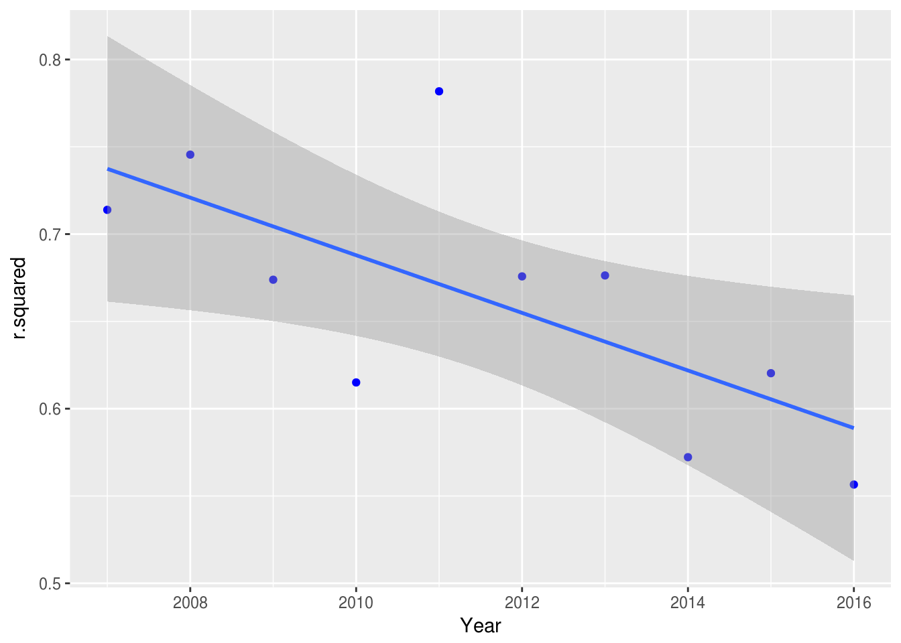
As before, attach the r Packages tidyverse, and broom.
Read the data from the saved file called, 2007-2016-BBRef.csv.
library(tidyverse)
library(broom)
Salary.File <- "2007-2016-BBRef.csv"
Salary.Data <- read.csv((Salary.File), check.names = FALSE, stringsAsFactors=FALSE)chosenlmvars <- c("Ht", "Wt", "Exp", "Age", "G", "GS", "MP", "FG", "FGA",
"FG%", "3P", "3PA", "3P%", "2P", "2PA", "2P%", "eFG%", "FT", "FTA",
"FT%", "ORB", "DRB", "TRB", "AST", "STL", "BLK", "TOV", "PF", "PTS",
"CareerG", "CareerGS", "CareerMP", "CareerFG", "CareerFGA", "Career3P",
"Career3PA", "Career2P", "Career2PA", "CareerFT", "CareerFTA",
"CareerORB", "CareerDRB", "CareerTRB", "CareerAST", "CareerSTL",
"CareerBLK", "CareerTOV", "CareerPF", "CareerPTS", "PlayoffG",
"PlayoffGS", "PlayoffMP", "PlayoffFG", "PlayoffFGA", "PlayoffFG%",
"Playoff3P", "Playoff3PA", "Playoff3P%", "Playoff2P", "Playoff2PA",
"Playoff2P%", "PlayoffeFG%", "PlayoffFT", "PlayoffFTA", "PlayoffFT%",
"PlayoffORB", "PlayoffDRB", "PlayoffTRB", "PlayoffAST", "PlayoffSTL",
"PlayoffBLK", "PlayoffTOV", "PlayoffPF", "PlayoffPTS", "CareerPlayoffG",
"CareerPlayoffGS", "CareerPlayoffMP", "CareerPlayoffFG", "CareerPlayoffFGA",
"CareerPlayoff3P", "CareerPlayoff3PA", "CareerPlayoff2P", "CareerPlayoff2PA",
"CareerPlayoffFT", "CareerPlayoffFTA", "CareerPlayoffORB", "CareerPlayoffDRB",
"CareerPlayoffTRB", "CareerPlayoffAST", "CareerPlayoffSTL", "CareerPlayoffBLK",
"CareerPlayoffTOV", "CareerPlayoffPF", "CareerPlayoffPTS")length(chosenlmvars)## [1] 94We currently have 94 independent variables in our model.
This is too many.
How shall we select the variables of interest?
We will begin with a multiple linear regression for the Center position for the first year 2007, using every independent variable from above. We will call this the full.model.
Then we use the step() function to automatically remove variables until it finds the variable combination that produces the best fit. We call this model the Center_regressions.model.
We grab the list of important variables from this 2007 model and keep them if they meet the following criteria:
- they are statistically significant with a p-value <.05
- they make sense (for example, getting a lower salary for making more baskets does not make sense)
We do this in a loop for each year until 2015 and set aside all the important variables in a data frame called sigvars.
Then we will use all the variables from all years.
Let’s take a look at the Center position over the 10 years of data and perform a regression for each year using the 94 independent variables:
sigvars <- tribble(~term)
oknegative <- c("Age", "Wt", "TOV", "PF")
for(i in 2007:2015){
Year <- i
tmp <-
Salary.Data %>%
filter(Pos.x=="C", Year==Year)
full.model <- lm(data=tmp, lmformula)
Center_regressions <- step(full.model, direction="backward")
sigvars <-
Center_regressions %>%
tidy() %>%
filter(p.value <.05) %>%
filter(estimate >0 | term %in% oknegative) %>%
select(term) %>%
tbl_df()%>%
bind_rows(sigvars)
}
write.csv(sigvars, "Centers_sigvars.csv", row.names = FALSE)Here are the unique (distict) variables from all years:
sigvars <- read.csv("Centers_sigvars.csv", check.names = FALSE, stringsAsFactors=FALSE)
sigvars %>% distinct(term)## term
## 1 Wt
## 2 FGA
## 3 AST
## 4 BLK
## 5 CareerFG
## 6 Career3PA
## 7 CareerORB
## 8 PlayoffMP
## 9 PlayoffFTA
## 10 CareerPlayoffFGA
## 11 CareerPlayoffFTSo this is our model for the Center position:
chosenlmvars <- c(
"Ht",
"MP",
"FGA",
"FG%",
"FT",
"BLK",
"PF",
"CareerFG",
"Career3P",
"CareerFTA",
"CareerORB",
"CareerAST",
"CareerPF",
"PlayoffMP",
"Playoff3P",
"PlayoffFTA",
"PlayoffSTL",
"CareerPlayoff3PA",
"CareerPlayoffFT",
"CareerPlayoffORB")
# Since we have some r special symbols in our Column names (like "%", and numbers: "3P"),
# DEFINITION:
# Take our variables of interest, then
# Paste backticks around each, then
# paste " + " between each, then
# paste "Salary ~ " before the whole thing, then
# turn that entire string into a formula, then
# put that formula in a variable -> lmformula
chosenlmvars %>%
sprintf("`%s`", .) %>%
paste(collapse= " + ") %>%
paste("Salary ~ ", .) %>%
as.formula() ->
lmformula# DEFINITION:
# Make a new variable called "Center_9_Year_Regression.full" from the following:
# Take data frame ("Salary.Data"), then
# filter only the Centers
# group by Year, then
# run a linear regresion
# using the long lmformula variable created above:
###########################
Center_9_Year_Regression.full <-
Salary.Data %>%
filter(Pos.x=="C") %>%
lm(data=., lmformula)Look at this regression for the Center position:
Center_9_Year_Regression.full %>% summary()##
## Call:
## lm(formula = lmformula, data = .)
##
## Residuals:
## Min 1Q Median 3Q Max
## -13412410 -1844559 -441564 1679743 13654907
##
## Coefficients:
## Estimate Std. Error t value Pr(>|t|)
## (Intercept) -2.774e+07 7.648e+06 -3.627 0.000306 ***
## Ht 3.981e+06 1.112e+06 3.581 0.000364 ***
## MP 2.116e+03 7.532e+02 2.809 0.005097 **
## FGA 3.557e+03 1.592e+03 2.234 0.025781 *
## `FG%` 3.963e+06 1.682e+06 2.355 0.018755 *
## FT 6.065e+03 3.777e+03 1.606 0.108771
## BLK 1.203e+04 4.603e+03 2.614 0.009121 **
## PF -2.608e+04 4.383e+03 -5.950 4.11e-09 ***
## CareerFG 7.162e+02 4.720e+02 1.518 0.129543
## Career3P -2.206e+02 2.319e+03 -0.095 0.924244
## CareerFTA 5.821e+02 4.735e+02 1.229 0.219338
## CareerORB 4.019e+02 8.328e+02 0.483 0.629484
## CareerAST -7.841e+02 5.623e+02 -1.394 0.163590
## CareerPF 6.022e+02 5.709e+02 1.055 0.291828
## PlayoffMP -1.191e+03 2.294e+03 -0.519 0.603922
## Playoff3P 3.921e+04 7.334e+04 0.535 0.593116
## PlayoffFTA 2.420e+04 1.333e+04 1.815 0.069880 .
## PlayoffSTL 1.611e+05 6.924e+04 2.327 0.020222 *
## CareerPlayoff3PA -3.044e+03 7.735e+03 -0.394 0.694004
## CareerPlayoffFT -8.794e+03 4.256e+03 -2.066 0.039134 *
## CareerPlayoffORB 4.204e+03 5.284e+03 0.796 0.426469
## ---
## Signif. codes: 0 '***' 0.001 '**' 0.01 '*' 0.05 '.' 0.1 ' ' 1
##
## Residual standard error: 3570000 on 750 degrees of freedom
## Multiple R-squared: 0.5738, Adjusted R-squared: 0.5625
## F-statistic: 50.49 on 20 and 750 DF, p-value: < 2.2e-16## Start: AIC=21190.33
## Salary ~ Ht + MP + FGA + `FG%` + FT + BLK + PF + CareerFG + Career3P +
## CareerFTA + CareerORB + CareerAST + CareerPF + PlayoffMP +
## Playoff3P + PlayoffFTA + PlayoffSTL + CareerPlayoff3PA +
## CareerPlayoffFT + CareerPlayoffORB
##
## Df Sum of Sq RSS AIC
## - CareerPlayoff3PA 1 2.9255e+11 7.5165e+15 21188
## - PlayoffMP 1 5.9895e+11 7.5168e+15 21188
## - Playoff3P 1 7.6524e+11 7.5169e+15 21188
## - CareerORB 1 1.7733e+12 7.5179e+15 21188
## - Career3P 1 2.1808e+12 7.5183e+15 21188
## - CareerPlayoffORB 1 2.5710e+12 7.5187e+15 21189
## <none> 7.5162e+15 21190
## - CareerFTA 1 2.3448e+13 7.5396e+15 21190
## - CareerFG 1 2.5438e+13 7.5416e+15 21191
## - FGA 1 2.6323e+13 7.5425e+15 21191
## - CareerAST 1 2.6616e+13 7.5428e+15 21191
## - FT 1 2.8507e+13 7.5447e+15 21191
## - BLK 1 3.0985e+13 7.5471e+15 21191
## - PlayoffFTA 1 3.3640e+13 7.5498e+15 21192
## - CareerPlayoffFT 1 3.3804e+13 7.5500e+15 21192
## - `FG%` 1 3.6341e+13 7.5525e+15 21192
## - CareerPF 1 4.2133e+13 7.5583e+15 21192
## - PlayoffSTL 1 4.5034e+13 7.5612e+15 21192
## - MP 1 1.3396e+14 7.6501e+15 21201
## - Ht 1 1.5642e+14 7.6726e+15 21203
## - PF 1 4.1313e+14 7.9293e+15 21226
##
## Step: AIC=21188.36
## Salary ~ Ht + MP + FGA + `FG%` + FT + BLK + PF + CareerFG + Career3P +
## CareerFTA + CareerORB + CareerAST + CareerPF + PlayoffMP +
## Playoff3P + PlayoffFTA + PlayoffSTL + CareerPlayoffFT + CareerPlayoffORB
##
## Df Sum of Sq RSS AIC
## - Playoff3P 1 4.8691e+11 7.5169e+15 21186
## - PlayoffMP 1 5.8754e+11 7.5170e+15 21186
## - CareerORB 1 1.8518e+12 7.5183e+15 21186
## - CareerPlayoffORB 1 2.6669e+12 7.5191e+15 21187
## - Career3P 1 6.5415e+12 7.5230e+15 21187
## <none> 7.5165e+15 21188
## - CareerFG 1 2.5147e+13 7.5416e+15 21189
## - CareerFTA 1 2.5955e+13 7.5424e+15 21189
## - CareerAST 1 2.6445e+13 7.5429e+15 21189
## - FGA 1 2.7295e+13 7.5437e+15 21189
## - FT 1 2.8218e+13 7.5447e+15 21189
## - BLK 1 3.0699e+13 7.5471e+15 21189
## - PlayoffFTA 1 3.3944e+13 7.5504e+15 21190
## - CareerPlayoffFT 1 3.5827e+13 7.5523e+15 21190
## - `FG%` 1 3.6339e+13 7.5528e+15 21190
## - CareerPF 1 4.1996e+13 7.5584e+15 21190
## - PlayoffSTL 1 4.4822e+13 7.5613e+15 21191
## - MP 1 1.3406e+14 7.6505e+15 21199
## - Ht 1 1.5775e+14 7.6742e+15 21201
## - PF 1 4.1356e+14 7.9300e+15 21224
##
## Step: AIC=21186.4
## Salary ~ Ht + MP + FGA + `FG%` + FT + BLK + PF + CareerFG + Career3P +
## CareerFTA + CareerORB + CareerAST + CareerPF + PlayoffMP +
## PlayoffFTA + PlayoffSTL + CareerPlayoffFT + CareerPlayoffORB
##
## Df Sum of Sq RSS AIC
## - PlayoffMP 1 4.1944e+11 7.5174e+15 21184
## - CareerORB 1 1.8610e+12 7.5188e+15 21185
## - CareerPlayoffORB 1 2.5328e+12 7.5195e+15 21185
## - Career3P 1 6.1754e+12 7.5231e+15 21185
## <none> 7.5169e+15 21186
## - CareerFG 1 2.4744e+13 7.5417e+15 21187
## - CareerAST 1 2.7333e+13 7.5443e+15 21187
## - CareerFTA 1 2.7765e+13 7.5447e+15 21187
## - FT 1 2.7769e+13 7.5447e+15 21187
## - FGA 1 2.8925e+13 7.5459e+15 21187
## - BLK 1 3.0371e+13 7.5473e+15 21187
## - PlayoffFTA 1 3.4291e+13 7.5512e+15 21188
## - CareerPlayoffFT 1 3.5621e+13 7.5526e+15 21188
## - `FG%` 1 3.6205e+13 7.5531e+15 21188
## - CareerPF 1 4.2020e+13 7.5590e+15 21188
## - PlayoffSTL 1 5.0208e+13 7.5671e+15 21189
## - MP 1 1.3357e+14 7.6505e+15 21197
## - Ht 1 1.5751e+14 7.6744e+15 21199
## - PF 1 4.1309e+14 7.9300e+15 21222
##
## Step: AIC=21184.44
## Salary ~ Ht + MP + FGA + `FG%` + FT + BLK + PF + CareerFG + Career3P +
## CareerFTA + CareerORB + CareerAST + CareerPF + PlayoffFTA +
## PlayoffSTL + CareerPlayoffFT + CareerPlayoffORB
##
## Df Sum of Sq RSS AIC
## - CareerORB 1 1.6431e+12 7.5190e+15 21183
## - CareerPlayoffORB 1 2.2389e+12 7.5196e+15 21183
## - Career3P 1 5.9610e+12 7.5233e+15 21183
## <none> 7.5174e+15 21184
## - CareerFG 1 2.4344e+13 7.5417e+15 21185
## - CareerAST 1 2.7746e+13 7.5451e+15 21185
## - CareerFTA 1 2.8520e+13 7.5459e+15 21185
## - FT 1 2.8827e+13 7.5462e+15 21185
## - FGA 1 2.9293e+13 7.5467e+15 21185
## - BLK 1 3.0377e+13 7.5477e+15 21185
## - CareerPlayoffFT 1 3.5233e+13 7.5526e+15 21186
## - `FG%` 1 3.6316e+13 7.5537e+15 21186
## - CareerPF 1 4.1601e+13 7.5590e+15 21186
## - PlayoffFTA 1 4.9368e+13 7.5667e+15 21187
## - PlayoffSTL 1 6.9088e+13 7.5864e+15 21189
## - MP 1 1.3412e+14 7.6515e+15 21195
## - Ht 1 1.5766e+14 7.6750e+15 21197
## - PF 1 4.1324e+14 7.9306e+15 21220
##
## Step: AIC=21182.6
## Salary ~ Ht + MP + FGA + `FG%` + FT + BLK + PF + CareerFG + Career3P +
## CareerFTA + CareerAST + CareerPF + PlayoffFTA + PlayoffSTL +
## CareerPlayoffFT + CareerPlayoffORB
##
## Df Sum of Sq RSS AIC
## - CareerPlayoffORB 1 8.6096e+11 7.5199e+15 21181
## - Career3P 1 4.3867e+12 7.5234e+15 21181
## <none> 7.5190e+15 21183
## - CareerFG 1 2.3306e+13 7.5423e+15 21183
## - CareerFTA 1 2.7479e+13 7.5465e+15 21183
## - CareerAST 1 2.8067e+13 7.5471e+15 21183
## - BLK 1 2.9141e+13 7.5481e+15 21183
## - FGA 1 2.9948e+13 7.5489e+15 21183
## - FT 1 3.0660e+13 7.5497e+15 21184
## - `FG%` 1 3.6567e+13 7.5556e+15 21184
## - CareerPlayoffFT 1 3.8946e+13 7.5579e+15 21184
## - PlayoffFTA 1 4.9169e+13 7.5682e+15 21185
## - CareerPF 1 5.3067e+13 7.5721e+15 21186
## - PlayoffSTL 1 7.1273e+13 7.5903e+15 21187
## - MP 1 1.3394e+14 7.6529e+15 21193
## - Ht 1 1.6099e+14 7.6800e+15 21196
## - PF 1 4.2604e+14 7.9450e+15 21220
##
## Step: AIC=21180.68
## Salary ~ Ht + MP + FGA + `FG%` + FT + BLK + PF + CareerFG + Career3P +
## CareerFTA + CareerAST + CareerPF + PlayoffFTA + PlayoffSTL +
## CareerPlayoffFT
##
## Df Sum of Sq RSS AIC
## - Career3P 1 4.8021e+12 7.5247e+15 21179
## <none> 7.5199e+15 21181
## - CareerFG 1 2.2446e+13 7.5423e+15 21181
## - CareerAST 1 2.7597e+13 7.5475e+15 21181
## - CareerFTA 1 2.7802e+13 7.5477e+15 21181
## - BLK 1 2.8764e+13 7.5486e+15 21181
## - FGA 1 2.9143e+13 7.5490e+15 21181
## - FT 1 2.9835e+13 7.5497e+15 21182
## - `FG%` 1 3.6488e+13 7.5563e+15 21182
## - PlayoffFTA 1 4.8851e+13 7.5687e+15 21183
## - CareerPF 1 7.1278e+13 7.5911e+15 21185
## - PlayoffSTL 1 7.2659e+13 7.5925e+15 21186
## - CareerPlayoffFT 1 9.2368e+13 7.6122e+15 21187
## - MP 1 1.5293e+14 7.6728e+15 21193
## - Ht 1 1.6133e+14 7.6812e+15 21194
## - PF 1 4.5708e+14 7.9769e+15 21220
##
## Step: AIC=21179.13
## Salary ~ Ht + MP + FGA + `FG%` + FT + BLK + PF + CareerFG + CareerFTA +
## CareerAST + CareerPF + PlayoffFTA + PlayoffSTL + CareerPlayoffFT
##
## Df Sum of Sq RSS AIC
## - CareerFG 1 1.9205e+13 7.5439e+15 21179
## <none> 7.5247e+15 21179
## - CareerAST 1 2.6261e+13 7.5509e+15 21180
## - FT 1 2.9000e+13 7.5537e+15 21180
## - FGA 1 2.9851e+13 7.5545e+15 21180
## - BLK 1 3.2494e+13 7.5572e+15 21180
## - CareerFTA 1 3.4196e+13 7.5589e+15 21180
## - `FG%` 1 4.0824e+13 7.5655e+15 21181
## - PlayoffFTA 1 5.0110e+13 7.5748e+15 21182
## - CareerPF 1 6.9879e+13 7.5945e+15 21184
## - PlayoffSTL 1 6.9989e+13 7.5947e+15 21184
## - CareerPlayoffFT 1 9.2942e+13 7.6176e+15 21186
## - MP 1 1.4983e+14 7.6745e+15 21191
## - Ht 1 1.5878e+14 7.6834e+15 21192
## - PF 1 4.5449e+14 7.9792e+15 21218
##
## Step: AIC=21178.93
## Salary ~ Ht + MP + FGA + `FG%` + FT + BLK + PF + CareerFTA +
## CareerAST + CareerPF + PlayoffFTA + PlayoffSTL + CareerPlayoffFT
##
## Df Sum of Sq RSS AIC
## - CareerAST 1 9.3248e+12 7.5532e+15 21178
## - FT 1 1.5021e+13 7.5589e+15 21178
## <none> 7.5439e+15 21179
## - BLK 1 4.1445e+13 7.5853e+15 21181
## - PlayoffFTA 1 4.5725e+13 7.5896e+15 21181
## - `FG%` 1 4.8896e+13 7.5928e+15 21182
## - PlayoffSTL 1 7.6291e+13 7.6202e+15 21184
## - CareerPlayoffFT 1 9.3591e+13 7.6375e+15 21186
## - FGA 1 1.2425e+14 7.6681e+15 21188
## - CareerPF 1 1.2673e+14 7.6706e+15 21189
## - MP 1 1.3092e+14 7.6748e+15 21189
## - CareerFTA 1 1.4798e+14 7.6918e+15 21191
## - Ht 1 1.4903e+14 7.6929e+15 21191
## - PF 1 4.5458e+14 7.9984e+15 21218
##
## Step: AIC=21177.8
## Salary ~ Ht + MP + FGA + `FG%` + FT + BLK + PF + CareerFTA +
## CareerPF + PlayoffFTA + PlayoffSTL + CareerPlayoffFT
##
## Df Sum of Sq RSS AIC
## - FT 1 2.0863e+13 7.5741e+15 21178
## <none> 7.5532e+15 21178
## - BLK 1 4.5447e+13 7.5986e+15 21180
## - PlayoffFTA 1 5.1372e+13 7.6046e+15 21181
## - `FG%` 1 5.4018e+13 7.6072e+15 21181
## - PlayoffSTL 1 6.8659e+13 7.6219e+15 21182
## - CareerPlayoffFT 1 1.1467e+14 7.6679e+15 21186
## - FGA 1 1.1604e+14 7.6692e+15 21186
## - CareerPF 1 1.1769e+14 7.6709e+15 21187
## - MP 1 1.2331e+14 7.6765e+15 21187
## - CareerFTA 1 1.3865e+14 7.6918e+15 21189
## - Ht 1 1.5110e+14 7.7043e+15 21190
## - PF 1 4.4779e+14 8.0010e+15 21216
##
## Step: AIC=21177.74
## Salary ~ Ht + MP + FGA + `FG%` + BLK + PF + CareerFTA + CareerPF +
## PlayoffFTA + PlayoffSTL + CareerPlayoffFT
##
## Df Sum of Sq RSS AIC
## <none> 7.5741e+15 21178
## - BLK 1 4.0957e+13 7.6150e+15 21180
## - `FG%` 1 5.4007e+13 7.6281e+15 21181
## - PlayoffSTL 1 5.8921e+13 7.6330e+15 21181
## - PlayoffFTA 1 8.8653e+13 7.6627e+15 21184
## - CareerPF 1 9.7022e+13 7.6711e+15 21185
## - MP 1 1.4588e+14 7.7199e+15 21189
## - CareerPlayoffFT 1 1.5527e+14 7.7293e+15 21190
## - Ht 1 1.5799e+14 7.7320e+15 21190
## - FGA 1 1.8490e+14 7.7590e+15 21193
## - CareerFTA 1 2.1910e+14 7.7932e+15 21196
## - PF 1 4.4198e+14 8.0160e+15 21216##
## Call:
## lm(formula = lmformula, data = tmp)
##
## Residuals:
## Min 1Q Median 3Q Max
## -13557280 -1729759 -354099 1566593 13223131
##
## Coefficients:
## Estimate Std. Error t value Pr(>|t|)
## (Intercept) -2.774e+07 7.354e+06 -3.772 0.000176 ***
## Ht 4.032e+06 1.069e+06 3.773 0.000175 ***
## MP 2.611e+03 7.479e+02 3.492 0.000511 ***
## FGA 2.482e+03 1.604e+03 1.548 0.122146
## `FG%` 2.921e+06 1.606e+06 1.819 0.069415 .
## FT 5.959e+03 3.700e+03 1.611 0.107714
## BLK 7.674e+03 4.570e+03 1.679 0.093567 .
## PF -2.586e+04 4.217e+03 -6.132 1.47e-09 ***
## CareerFG 7.315e+02 4.808e+02 1.521 0.128597
## Career3P -1.022e+03 2.294e+03 -0.445 0.656106
## CareerFTA 7.033e+02 4.815e+02 1.461 0.144534
## CareerORB -3.241e+02 8.068e+02 -0.402 0.688020
## CareerAST -8.739e+02 5.615e+02 -1.556 0.120091
## CareerPF 1.082e+03 5.527e+02 1.958 0.050620 .
## PlayoffMP -5.133e+02 2.199e+03 -0.233 0.815469
## Playoff3P 2.165e+04 8.205e+04 0.264 0.791941
## PlayoffFTA 2.231e+04 1.275e+04 1.750 0.080622 .
## PlayoffSTL 1.360e+05 6.718e+04 2.024 0.043316 *
## CareerPlayoff3PA -1.269e+03 7.776e+03 -0.163 0.870436
## CareerPlayoffFT -7.240e+03 4.128e+03 -1.754 0.079889 .
## CareerPlayoffORB 2.468e+03 5.103e+03 0.484 0.628747
## ---
## Signif. codes: 0 '***' 0.001 '**' 0.01 '*' 0.05 '.' 0.1 ' ' 1
##
## Residual standard error: 3315000 on 684 degrees of freedom
## Multiple R-squared: 0.5968, Adjusted R-squared: 0.585
## F-statistic: 50.62 on 20 and 684 DF, p-value: < 2.2e-16##
## Call:
## lm(formula = Salary ~ Ht + MP + FGA + `FG%` + BLK + PF + CareerFTA +
## CareerPF + PlayoffFTA + PlayoffSTL + CareerPlayoffFT, data = tmp)
##
## Residuals:
## Min 1Q Median 3Q Max
## -13148133 -1771350 -331103 1594952 13804165
##
## Coefficients:
## Estimate Std. Error t value Pr(>|t|)
## (Intercept) -2.759e+07 7.202e+06 -3.831 0.000139 ***
## Ht 3.972e+06 1.045e+06 3.802 0.000156 ***
## MP 2.321e+03 6.352e+02 3.653 0.000278 ***
## FGA 4.357e+03 1.059e+03 4.113 4.37e-05 ***
## `FG%` 3.481e+06 1.566e+06 2.223 0.026542 *
## BLK 8.450e+03 4.365e+03 1.936 0.053296 .
## PF -2.459e+04 3.867e+03 -6.359 3.68e-10 ***
## CareerFTA 1.210e+03 2.702e+02 4.477 8.84e-06 ***
## CareerPF 9.370e+02 3.145e+02 2.979 0.002989 **
## PlayoffFTA 2.495e+04 8.761e+03 2.848 0.004529 **
## PlayoffSTL 1.161e+05 4.999e+04 2.322 0.020529 *
## CareerPlayoffFT -6.767e+03 1.795e+03 -3.769 0.000178 ***
## ---
## Signif. codes: 0 '***' 0.001 '**' 0.01 '*' 0.05 '.' 0.1 ' ' 1
##
## Residual standard error: 3306000 on 693 degrees of freedom
## Multiple R-squared: 0.5937, Adjusted R-squared: 0.5872
## F-statistic: 92.05 on 11 and 693 DF, p-value: < 2.2e-16chosenlmvars <- c(
"Ht",
# "I(Ht^2)",
"MP",
"FGA",
"FG%",
"FT",
"BLK",
"PF",
"CareerFG",
"Career3P",
"CareerFTA",
"CareerORB",
"CareerAST",
"CareerPF",
"PlayoffMP",
"Playoff3P",
"PlayoffFTA",
"PlayoffSTL",
"CareerPlayoff3PA",
"CareerPlayoffFT",
"CareerPlayoffORB")
# Since we have some r special symbols in our Column names (like "%", and numbers: "3P"),
# DEFINITION:
# Take our variables of interest, then
# Paste backticks around each, then
# paste " + " between each, then
# paste "Salary ~ " before the whole thing, then
# turn that entire string into a formula, then
# put that formula in a variable -> lmformula
chosenlmvars %>%
sprintf("`%s`", .) %>%
paste(collapse= " + ") %>%
paste("Salary ~ ", .) %>%
as.formula() ->
lmformulaScatter plots for the Center_9_Year_Regression key variables.
Salary.Data %>%
filter(Pos.x=="C") %>%
ggplot(aes(x=MP, y=Salary)) + geom_point(shape=1) + # Use hollow circles
geom_smooth(method=lm) # Add linear regression line (by default includes 95% confidence region)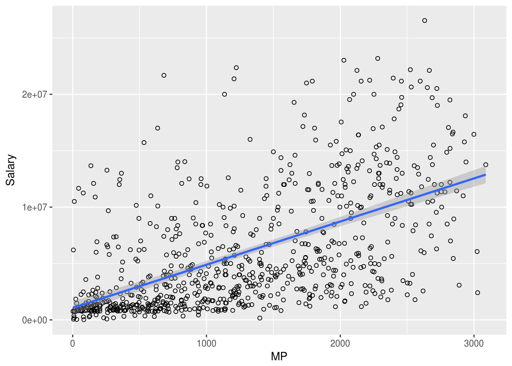
######
# Note: For the following "pander" library (makes nice tables) to work, I had to:
# 1. open a csh
# 2. su
# 3. R
# 4. install.packages("pander")
# 5. choose a nearby CRON
######library(pander)
#panderOptions('digits', 2)
#panderOptions('round', 2)
#panderOptions('keep.trailing.zeros', TRUE)
panderOptions('big.mark', ',')
reduced.model %>%
tidy() %>%
filter(p.value <.05) %>%
pander(add.significance.stars=TRUE)| term | estimate | std.error | statistic | p.value |
|---|---|---|---|---|
| (Intercept) | -27,593,438 | 7,202,389 | -3.831 | 0.0001391 |
| Ht | 3,972,079 | 1,044,734 | 3.802 | 0.0001562 |
| MP | 2,321 | 635.2 | 3.653 | 0.0002783 |
| FGA | 4,357 | 1,059 | 4.113 | 4.373e-05 |
FG% |
3,481,329 | 1,566,096 | 2.223 | 0.02654 |
| PF | -24,592 | 3,867 | -6.359 | 3.68e-10 |
| CareerFTA | 1,210 | 270.2 | 4.477 | 8.836e-06 |
| CareerPF | 937 | 314.5 | 2.979 | 0.002989 |
| PlayoffFTA | 24,952 | 8,761 | 2.848 | 0.004529 |
| PlayoffSTL | 116,079 | 49,994 | 2.322 | 0.02053 |
| CareerPlayoffFT | -6,767 | 1,795 | -3.769 | 0.0001778 |
* Scripts created: + Basketball_Reference_Scraper.R = combined script to scrape both team website for Player names and Salaries AND Player websites for all game statistics + Join_Data_Frames.R = join the Salary data to the player data and run a bunch of other housekeeping items on the data to get it ready to analyze + Salary_Regressions.R + Salary_by_Position_Regressions.R